Principles of Mass Spectrometry
Mass spectrometry is the methodology of determining the mass of molecules or other substances. This is done by ionizing the molecule in one of dozens of known ways, placing it in the gas phase, and then detecting the ion. The accurate mass measurement is done on an instrument calibrated with molecules of known mass across the range of measurement.
This document discusses the three essential components of the mass spectrometer:
This document also discusses the data produced by the instrument, the mass spectrum, and then why the instrument is used in proteomics, chiefly for protein identification and quantitation.
[Images in this section taken from de Hoffmann & Stroobant, Mass Spectrometry: Principles and Applications, 3rd Ed.]
The source is responsible for essentially two things:
There are numerous technologies which achieve this goal in mass spectrometry, and they are classed in various ways.
cathode rays) directly or indirectly as in electron and chemical ionization
hardionization often by a collision with a (charged) particle: for instance, an electron or maybe heavy unreactive atom like a noble gas atom xenon or maybe argon).
softionization involving no kinetic energy (collision) at all, but rather the chemical potential of a reagent, such as putting in formic acid to protonate biomolecules
The molecules to be ionized will be presented in different phases: in solution, complexed as solids, or they may be first put into the gas phase before ionization. The table below is a partial list of the methods for ionization of liquid-based (dissolved) molecules:
Beam
-based Ionizations. It should be considered that any means
by which energy can be imparted to the atom, atoms, molecule, or molecules
under investigation can and will be exploited. For electromagnetic radiation-based
(photon particle-based) ionizations, from gamma to radio waves will be used.
For molecules, which are multiple atoms bonded together in which the molecule
has multiple energy partitions
that include translation, rotational,
vibrational, and electronic, and in which the energy spectrum is utilized to
affect one or more particular partitions, the spectrum can be selectively
exploited to achieve a particular energy input in order to selectively fragment
a molecule to obtain structural information. Particle-based ionizations
would clearly include low and high energy electrons, but possibly other
molecules too (fast atom bombardment, alpha particles, etc.).
| Technique | Flow Rate | Information Produced | Sample Type | Usual Mass Range |
|---|---|---|---|---|
| thermospray (TSP, TSI) | 1.0-2.0 ml/min | MH+,(M-H)− | polar water soluble, e.g. drugs, metabolites | <1000 |
| plasmaspray (PSP) | 0.5-2.0 ml/min | MH+,(M-H)−, some fragmentation | compounds less polar than for TSP | <1000 |
| liquid nebulized (LINC) | 0.2-1.0 ml/min | M•+ + fragmentation EI-type spectra | non-polar, e.g. fatty acids, pesticides | <1000 |
| atmospheric pressure chemical ionization (APcI) | 0.2-2.0 ml/min | MH+, (M-H)−, and some fragmentation | polar, e.g. pesticides, azo dyes, drugs | <1000 |
| dynamic fast atom/ion bombardment (FAB/FIB) | 1-10 μl/min | M•+ + fragmentation EI-type spectra | non-polar, e.g. fatty acids, pesticides | <1000 |
| electrospray (ESI) | 1-1000 µl/min | multiply charge state ions in both positive and negative modes | polar compounds, particularly large biomolecules |
[Source: Chapter A3 Electron Ionization
Back to Basics,
Micromass UK Ltd. pp 41-54.]
Electrons are accelerated in an electric field of 70 Volts and acquire a kinetic energy that is 70 electron-volts (eV). In passing close to or through the target molecule (M), the electrons (e−) cause the ejection of an electron from the molecule to form a radical cation (M•+):
e− + M → M•+ + 2e−
The reaction is sometimes called electron impact, although there is no real impact. However, the energy imparted in 70 eV can be such the molecule will fragment into ions of smallers species (A+, B+, etc.). The fragmentation is characterstic, and is thus a fingerprint. With some molecules, the energy of the electron and the electon itself is absorbed, yielding a radical-anion (M•−).
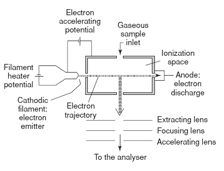 As shown in the figure at the right, the ion source is usually constructed of a block composed a ‘box’ more or less gas-tight. A heated filament is used to produce electrons to ionize sample passing by, and these are accelerated through a 70 volt potential. The electrons are then directed into a beam by a magnetic field. This beam then interacts with gas-phase sample molecules. A set of focusing and extraction plates then takes ionized molecules from the source into the analyzer.
With chemical ionization, the molecule (M) to be ionized is first volatilized (nebulized, evaporated) into a stream with another gas called the reagent gas (R). If the molecule is already gaseous, it is essentially injected into the reagent gas. The reagent gas is present in much larger amounts than the gaseous presence of target molecules.
The mixture of the reagent gas with gaseous target molecules then enters the chamber where there is an electron beam just as for electron ionization described above; in fact, the construction of the source is very much the same. But the electron beam strikes the reagent gas molecules rather than the target, largely because the concentration of reagent gas is present in orders of magnitude far larger than the target molecule gas. This leads to ionization of the reagent gas molecules. There is a rapid buildup of ionized and somewhat energetic reagent gas molecules, and these in turn come into contact with target gas molecules. This contact or interaction typically results in the ionization of the target molecules. Ionized molecules are brought into the mass spectrometer beam. This can include ionized reagent gas molecules or their byproducts, but with special filters or gates at certain voltages, these unwanted ions can be removed from the beam, basically by pulling them out in ways that do not affect the target molecules.
The essential scheme of chemical ionization is:
R (g) + e− → R•+ (g) + 2 e−
R•+ (g) + R′H (g) → R (g) + R′H+ (g)
M (g) + R′H+ → MH+ (g) + R′ (g)
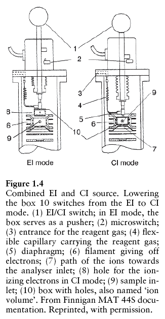 Notice the detail of the ionization by reagent gas. In the scheme, the reagent gas becomes the radical cation instead of the target molecule. This then finds a hydrogen on another reagent gas molecule (labeled with a prime character); the radical cation abstracts an electron from R′H to make it a cation. This finds it way to a target molecule, ionizing it by protonation.
Note that in this scheme, the reagent gas R is essentially a catalyst: all forms of R (ionized or in excited state) are ideally returned to the ground state with no change in structure. However, it is possible for the R molecule in the excited state to break down or react with other excited R molecules and perhaps form covalently larger molecules. Since the reagent gas is basically replenished in a stream mixture with target molecules before entering the cathode ray chamber, this never becomes a problem.
The only difference between electron ionization and chemical ionization is
essentially the use of an intermediate, the reagent gas. The scheme shows that
electrons do not impart their significant energy directly to the target
molecule M. In fact, it has been shown that this energy is not just sufficient
to cause ionization (knocking out an electrode), but rather it can actually
cause sometimes unwanted fragmentation of the target molecule. When this was
observed, the use of the reagent gas (chemical ionization) was developed as a
means of softening the blow
the prevent fragmentation. This chemical
ionization is basically indirect electron ionization. For this reason
an ion source was developed (see figure at right above) that can function either
as EI and CI via a mode switch.
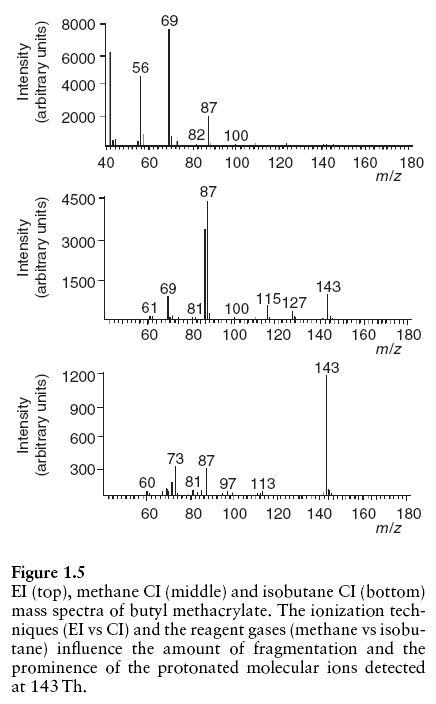 If EI can cause target molecule fragmentation instead of mere ionization, then why discuss it...why does it exist? Firstly for most molecules, the fragmentation is not the only resulting pathway: some of the intact molecules show up on the spectrum, indicating only ionization (as a radical cation) occurred. Secondly and quite importantly, when molecules fragment under EI, they produce fragment ions (usually called product ions, occasionally child ions) of sizes (m/z values) and relative intensities that are quite characteristic of the intact molecule. In other words, the EI spectra of a molecule, with all the fragment product ions, is very much like a fingerprint (identifying pattern) for the molecule, usually unique to it. The ions produced can have their m/z and intensity values entered input to a query interface to a spectrum library, with certain tolerances (error windows) set, and matches can be produced in a hit list.
EI is often used in combination with CI (it is easy enough just to switch modes) in order to get the intact mass at least. Note that CI too produce fragments of the target. Using different reagent gases can help to affect the reduction of fragmentation.
Reagent gases typically used are methane [CH4], hydrogen [H2], butane [C4H10], ammonia [NH3], and methanol [CH3OH]
Both EI and CI would be used in a GC-MS instrument configured for doing (small molecule) metabolite profiling in metabolomics studies. The GC detector, either a thermal conductivity device with exit flow interfaced to the EI/CI of the MS, or a post-GC column split flow to a more sensitive flame ionization detector (the other split to the MS), would do the quantiation of the metabolite, and the MS would do the identification.
[Source: Chapter B4 Thermospray and Plasmaspray Interface,
Back to
Basics, Micromass UK Ltd.]
[Source: Chapter B6 Dynamic FAB LSIMS Interface,
Back to Basics,
Micromass UK Ltd.]
Solutions which are the eluates of a liquid chromatography process can be interfaced to a mass spectrometer via a technique that accelerates heavy ionized atoms into the solution, causing a desorption of solvent and solute molecules into the gas phase, the mixture of which is molecules with a positive, negative, and zero charge. The desorbed ions can then be accelerated into an ion beam by setting up the magnitude and polarity of an extraction plate. The bombardment, and therefore the desorption, is continuous rather than pulsed. If the solvent (matrix) is of low volatility, desorption often involves positive and negative ionic forms of the solvent molecules.
Typically there is little fragmentation, and a solute of mass M within a matrix of mass S will produce species [M+H]+ or [M-H]− as well as [S+H]+ or [S-H]−. The solution is usually set at the ambient (room) temperature; heating would add vibrational and rotational energy to the ion, and so thermally labile substances (peptides, proteins, nucleosides, sugars) can be analyzed without structural disintegration. As liquid chromatography is typically used to separate involatile, thermally labile substances, this type of ionization is suitable.
Fast atoms are produced and shot from a gun aimed at the solution. The production fast atoms is rather complex. Xenon (Xe) is the usual atom, but fast heavy ions of cesium (Cs+) are also used. To produce the fast atoms of Xe, the following reactions occur:
The first reaction uses a beam of electrons to ionize Xe, and the Xe ions are then accelerated within the system. These ions strike slow moving Xe atoms, accelerating them by a transfer of momentum or a transfer a charge, such that the fast moving unionized atom is formed. Ions and atoms moving in the direction of the gun nozzle are are filtered to remove the ions so that only the unionized atoms emerge from the gun nozzle.
Usually the solution of interest is flowed past a metal region defining the
target area. If this solution is flowing, this makes the technique
dynamic
; if the solution is stagnant, the technique is static.
Liquid chromatography solvents are usually water, methanol, and acetonitrile. The problem is that these solvents are too volatile under the high vacuum of a mass spectrometer interface. Evaporation would lead to solute insolubility and blocked flow, as well as the inability to desorb using fast atoms. The typical technique is to create an admixture of a high boiling point solvent is postcolumn flow with the eluate. The admixture usually creates a matrix whose composition is 10% of the highly boiling point material. In rare cases, this high boiling point matrix can be added to the chromatographic solvent without affecting separation.
One dynamic FAB probe that has been described has a 50 or 75 µm silica capillary fitting to a compression fitting on a probe holder with an insulator, and into a vacuum lock. The capillary continues down the probe shaft and ends flush with a probe tip composed of a copper surface. Flow rates are set to less than 5 ml/min: this balances evaporation and production of ions. Solvent and other matrix elements have masses that are suppressed from the spectral recording.
Another dynamic FAB probe makes use of a screen and wick assembly. A capillary HPLC eluate has a flow of 1-10 µl/min
Electrospray ionization (ESI) is designed to prepare liquid phase analytes and gas phase ions. This transition occurs in three stages.
Cone gas. A counterflow gas serves to dry the ions that are still part of the solvent. This desolvation cone gas is usually nitrogen and is also heated. As the droplet disappears, the surface charges are brought closer together and the ions are focused as a result.
Studies of the signal response against the concentration of analyte show that signal is linear over 2-3 orders of magnitude from about 0.1 to 10 μM. Beyond 10 μM, the increase in signal is minor. This is possibly related to inhibition of the release of ions from the surface, either because of a repelling surface layer or because of formation of a solid residue. This phenomenon is known as ion suppression.
In addition to ion suppression seen as surface competition in which electrolytes have the same charge as the analyte and compete with it for gas-phase release, there is also suppression caused by charge competition, in which electrolyte ions remove charge from analyte ions such as by proton transfer.
The relative sensitivity of ions is a reflection of their surface activity. The relative sensitivity coefficient k are shown:
| Ion | k | Ion | k | Ion | k |
|---|---|---|---|---|---|
| Cs+ | 1.0 | Ni2+(tripyridyl)2 | 5 | morphine+ | 3 |
| K+ | 1.0 | tetraethylammonium | 5 | codeine+ | 5 |
| NH4+ | 1.3 | tetrapropylammonium | 8 | heroin+ | 6 |
| Li+ | 1.6 | tetrabutylammonium | 2 | cocaine+ | 10 |
| Na+ | 1.6 | tetrapentylammonium | 14 | ||
| triheptylammonium | 10 | ||||
| triundecylammonium | 10 | ||||
| Ref: P. Kebarle, Y Ho in Electrospray Ionization Mass Spectrometry: Fundamentals, Instrumentation & Applications, R. B. Cole, ed. | |||||
The table shows that sensitivity increases with the smaller size of the ion, although ions with increasing surface activity are also more sensitive.
Several factors affect successful ESI:
Compounds that are already charged in solution are likely to provide better sensitivity, but ionization is not necessary. Hydroen bonding to salts can provide the charge.
Molecules with good surface-active properties also provide sensitivity, but it must be able to associate with a salt to be ionized.
Molecules that are ionized and have surface-active properties will likely be highly sensitive.
The Z-spray source has the following advantages and disadvantages:
| Advantages | Disadvantages |
|---|---|
| molecular weight confirmation | limited fragmentation |
| ionic & easily protonated | limited to relatively low flow rates |
| good sensitivity | Z-spray rugged enough to handle non-volatile salts, but highly ionic modifiers reduce sensitivity |
| sample MW can exceed instrument range if molecule can be multiply charged | |
| suitable for capillary LC |
Optimal flow rates tend to be 100-250 μl/min, but may be less if analyte concentration is high.
Ionization of low MW molecules is usually that they are singly charged, typically by acquiring a proton. Biomolecules of low MW that are basic, particularly amines, will usually gain a proton and should be analyzed in positive mode. Extreme care should be taken when using ESI with ammonium, potassium, or sodium ions present since they form adducts. These adducts increase the mass by the adduct mass: NH4+ (M + 18), Na+(M + 23), and K+ (M + 39); this typically causes problems with interpretation of mass spectra, and analysts should always take caution with this.
High MW biomolecules and polymers form multiply charged species. Fragmentation of these species rarely occurs.
The sensitivity—ability to detect an ion—will invariably depend on the analyte and its matrix.
Induced ionization. Although typically conditions are used that cause ionization to occur in the mobile phase, before nebulization, ionization can be induced by droplet evaporation leading to a high charge surface or volume density.
Fragmentation usually does not occur in the source. Increasing the voltage of the sample cone however can cause fragmentation. Normally the cone is used to extract ions from the atmospheric region and then into the first vacuum. Ions accelerate to the rear toward the skimmer. The region between the cone and the skimmer is under vacuum, although the pressure is high with respect the analyzing regions. If the voltage is increased in the cone, the higher cone-skimmer voltage difference results in a larger acceleration, and with solvent vapor and nitrogen present, the collisions might cause fragmentation. The energies are such that only weak sigma bonds between C-N and C-O are likely to be broken however.
There seems to be more of an art than a science to starting the flow from the capillary for electrospray. Available to the user are several independent variables (i.e. variables the user can control, or inputs), and a couple of variables to monitor to see how well the setup is, or the outputs.
One of the first and more important variables (outputs) to monitor in electrospray is a visual one. For the Nanoflow-type sources, which include the Nano-LC and the Nanovial (glass capillary), the stream must be set up with the proper distance of the tip of the capillary from the sample cone.
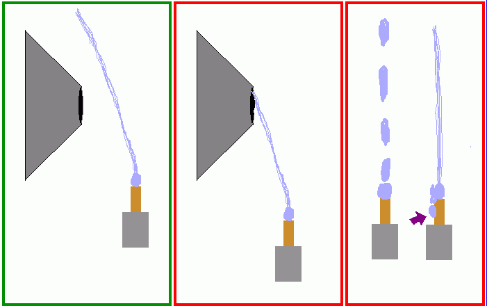 The figure at right shows a panel of three images. The green-boxed image shows a typical example of the Nano-LC as seen through the magnifying scope from the top of the source. The user should absolutely be using the magnifying scope with the source chamber illuminated according to the setup provided by Waters/Micromass. Also useful is for the operator to put his hand over the transparent chamber at the 3 o'clock position (as the operator faces the source) to prevent stray light especially daylight entering the laboratory from an unshaded window from preventing viewing of the electrospray. The figure belows shows a panel boxed in green that shows an electrospray that appeared to be ideal. It also shows two panels boxed in red that give unsteady or poor ion beams. Note that the green-boxed image shows a stream that actually looks like a thin fabric thread slightly wavering as if in the wind, and that it bends toward the sample cone but passes beyond the sample cone.
The red-boxed images in contrast represent examples of poor electrospray. In the middle image red-boxed example, the thread-like stream is actually seen entering the mouth of the sample cone. While this might seem logical since more of the analyte enters directly, the problem is that the analyte is trapped in the liquid phase in aerosolized droplets. Ionized analyte molecules can only become part of a detectable ion beam if they have been put into the gas phase.
In the red-boxed image at the far right, two electrospray tips are shown. The tip on the left shows drops being sprayed as visibly large drops from the tip of the capillary. The desolvation gas is essentially blowing the drops formed at the tip off the tip. But the thread-like small stream is not formed because either the capillary voltage is too low (or non-existent), or if voltage is sufficiently high based on experience, it could be that the sample is not prepared correctly; perhaps there is no ion-promoting agent in the solvent, such as trifluoroacetic acid (TFA) in a sufficient concentration (0.1% v/v). In the red-boxed example on the right, drops are seen to form on the outer wall of the capillary, behind the tip, as if emerging from a wall defect itself. This is probably not the case. The wall was wetted on the surface probably as a result of flow started in the capillary without desolvation gas or capillary voltage being on, and so a backward flow from the capillary tip leads to droplet formation in this way.
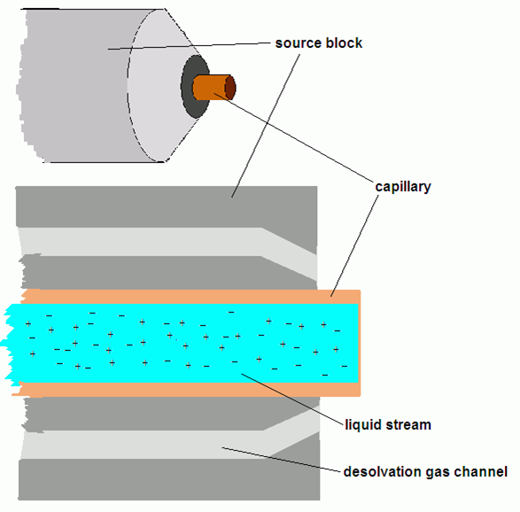 In the figure at left a magnified view of a capillary in the source block is shown, in perspective, and in cross-section. In the cross-section, the liquid stream is shown with ionized (or perhaps ionizable) particles shown. There location and motion in the liquid phase shows them to be randomly distributed, diffusing in this way, and obeying the second law of thermodynamics. The desolvation gas channels around the capillary are apparent.
When the capillary voltage is applied in the positive ion mode and liquid flow is started, the source block is given a high negative voltage (seen in A in the figure below). The liquid within the capillary becomes polarized in the sense that positive ions (or positive portion of a dipole in the case of polarizable molecules) move toward the wall of the capillary, while negative ions (or the negative part of a dipole) are crowded within the radial center of the long axis of the capillary.
The stream that emerges from the tip forms a cone, called the Taylor cone (seen in B). The region of the Taylor cone region is magnified in C). The wall of the cone is merely a continuation of ordered arrangement of the ions from the source electric field, whose magnitude diminishes as the stream moves away from the block. Droplets begin to form from the cone tip, both from the effect of a high temperature, high flow desolvation gas and from a fission created by charge repulsion of ions at the surface. Being on the surface of droplets, positive ions are more likely than negative ions to enter the gas phase, promoted by charge repulsion and by the typical the typical forces that increase their kinetic energy sufficient to make the phase transition (hot nitrogen desolvation gas hitting either analyte or solvent molecules in gas provides the bulk of this kinetic energy.
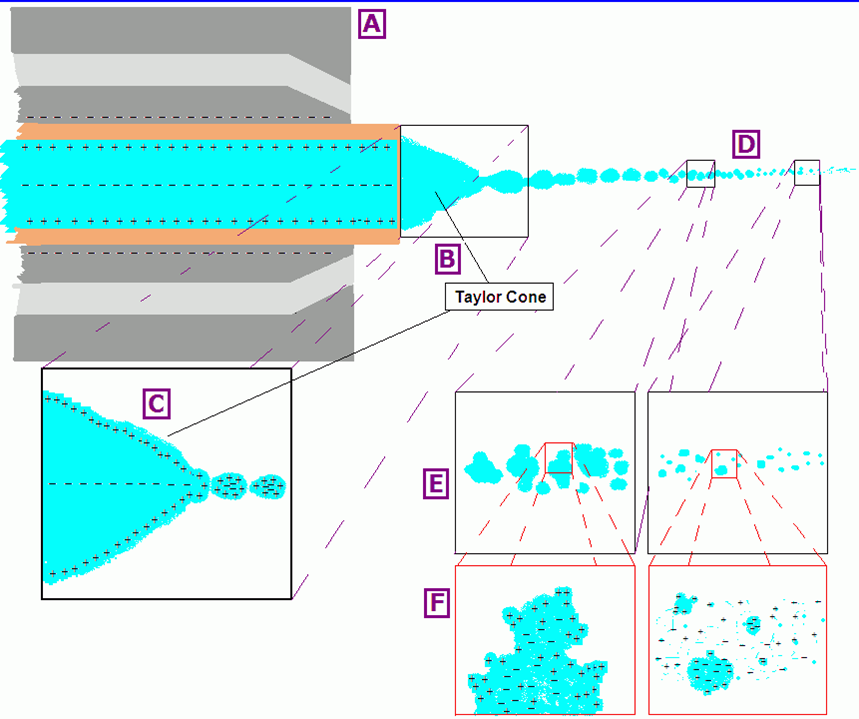
buddingprocess from the surface. Budding is quite distinct from fission however: the latter is a splitting into two (equal volumes), while in the former, smaller droplets emerge from a larger droplet to form
daughterdroplets.
Whether ever smaller droplet formation is a fission or budding process is not entirely clear. The important point is to promote the transition of the desired ion (positive or negative) into the gas phase, which electrospray does well.
APcI is ideal for neutral to polar compounds that are labile. Few adduct ions are formed on the analyte molecule, and flow rates from the uncharged capillary can be set to between 0.2 and 2.0 ml/min without splitting the flow. APcI can be used to confirm MW and has good sensitivity. Because it is gentle, there is limited information from fragmentation, and there is higher noise than signal from chemicals when ranged in the lower masses. APcI is not appropriate for analytes that are involatile.
APcI occurs in two stages:
As the sample emerges from the capillary, it encounters an electrified corona discharge needle. This typically ionizes the solvent molecules. These ions then react with the analyte molecules to form ionic clusters. The ionic charge is then transferred to the analyte molecule.
With APcI, only singly charged ions form and there is little fragmentation. Adducts particularly from the solvent can form, and the ion mass will reflect that. Relative to ESI, there are fewer matrix effects, e.g., spectra are not affected by minor changes in most variables such as type and strength of buffer.
The LC eluent is passed through a nebulizing needle to create a fine spray, and the spray is passed through a heated ceramic tube where the eluent droplets are fully vaporized. The resulting gas/vapor mixture then passes through a photon beam of a krypton (Kr) lamp to ionize the eluent sample molecules. Ions then pass through a conductive capillary and series of skimmers and lenses before going to the mass analyzer.
The major difference between APCI and APPI is that a lamp is subsititued for the corona needle.
APPI often uses a dopant or mobile phase modifier to assist with photo-ionization.
MALDI-based MS is important in the analysis of a number of samples of interest to biological chemists. In decreasing order of importance:
Generally MALDI MS is preferred because it is less complicated to prepare samples, and the spectra are not complicated by multiply charged forms as with ESI MS.
MALDI works in two stages. Primary ion formation occurs with ions generated by the initial laser pulse, which are typically the matrix molecules, as they absorb the laser light. Secondary ion formation occurs when the excited, ionized matrix molecules react with adjacent molecules, in matrix-matrix and matrix-analyte reactions.
Ionization of the analyte actually involves a great many reactions. Protonation is generally the most common, but cationization and the formation of free radicals is usual too.
The nitrogen (N2) laser provides a photon have 3.68 eV, and the ionization potential of the matrix molecule is usually 8-9 eV, the energy required to raise a π-bonding electron to its anti-bonding orbital. In order to achieve this ionization, multiple photons must be absorbed by a single matrix molecule, and the probability of this is quite low. Ionization could occur by a theory of energy pooling: multiple excited (but unionized) converge on a single molecule to cause its ionization.
Another theory is excited-state proton transfer (ESPT). In this acidity of a matrix molecule is increased by a single photon putting it into the excited state. A typical molecule that works by ESPT is salicylic acid (o-hydroxybenzoic acid): a photon would be sufficient to move the proton from the ortho-hydroxy group to the carbonyl oxygen of the carboxyl group, thereby producing a zwitter ionic excited state in the molecule. However, ESPT is not thought to affect the ionization of carboxylic acids (the proton on the COOH group itself), which typically make up the MALDI matrix. Moreover, substances with strong evidence of ESPT-type reactivity do not make good MALDI matrices. There is also no evidence that common MALDI matrices work by ESPT.
In another theory of disproportionation reactions, the following mechanism is asserted:
2 M ——> nhν (MM)* —> (M − H)− + (M + H)+
2 M ——> nhν (MM)* —> M − + M +
In this mechanism, interaction between excited matrixi molecules is required, and the interaction can involve proton and/or electron transfer to produce ionized states. So far, little experimental evidence has been produced to indicate this is a credible mechanism.
Preformed ions occur in compounds that are ionic by nature in their milieu (many salts), in metal-complexed analytes, and in pre-protonated compounds. Large molecules with the potential for ion preformation have a lower electrostatic barrier. All preformed ions have the ability to desorp (enter the gas phase from the solid) easily, assuming that ion preformation occurs in the matrix-analyte sample. Thermal desorption experiments produce gas phase ions (thus ions are present without laser-based activation). But this still poses a problem in proving that ionization does not occur in the gas phase and is preformed. Another problem as well as that preformed negative ions are not common.
Thermal ionization is seen with matrices in two phases subjected to high temperatures. Pressure pulse ionization has been shown when mechanical stressed is transduced into electronic excitation. Spallation is ion and electron emission that occurs from mechanical failure causing piezoelectric effects. Finally, thermal excitation resulting from high pressure shockwaves induced by the laser is another possible mechanism.
Ionized species show a significant degree of metastable decay, in which associated neutral molecules (water, ammonia) and amino acid side chains and random cleavage at peptide bonds occurs. Linear mode MALDI cannot resolve precursor and metastable decay ions since they were already accelerated at the source and arrive at the same time. However in reflectron mode there will be kinetic energy differences in the ion mirror.
Interpretation of spectra takes time and practice. Fragmentation is usually residue-specific. Fragmentation along the peptide backbone is of type an, bn, and yn, according to the Biemann nomenclature. Respectively, this fragmentation is between the alpha-carbon and carboxyl carbon from the N-terminus, the carboxyl carbon and alpha-nitrogen (amide bond) from the N-terminus, and the carboxyl carbon and alpha-nitrogen from the C-terminus. The systematic approach looks for amino acid immonium (H2N+=CHR) and internal acyl ions (bn-like ions) and starting N- and/or C-termini chains. Look for differences of 28u (bn − an) and doublets with mass difference of 17u (e.g., an and an − 17). The information is combined to deduce the primary sequence. Derivitization of the analyte may help in providing more information for sequence deduction.
Alternative to Reflected ToF-MS include Delayed Extraction Linear ToF-MS. DE Lin ToF-MS means that the ions accelerated in the beam were fragmented in or at the source (during desportion or ion formation) rather than fragmented after acceleration. The peak pattern shows cn, yn, and yn−15, different from the post-source decay pattern of an, bn, and yn above. The mass differences of yn less 15 Da point to zn + 2 ions, but additional studies are required to prove that these are zn+2 ions.
Sample preparation is critical to good MALDI-ToF. Factors that affect good analysis include the following:
history: exposure to strong ionic detergents, formic acid
A MALDI matrix right for the analyte being studied should have the following qualities:
Carboxylic acids are generally thought to be the best since their labile
protons can protonate even neutral molecules in a plume with the accelerating
voltage in positive ion mode. Acidic environments may not be good for some
analytes however, especially if tertiary structure denaturation is to be
avoided. Those analytes not easily protonated are cationized
instead, usually be adding small amount of salt (alkali metals, Cu, Ag) to the
analyte. Oligonucleotides are more easily deprotonated and are thus analyzed in
negative ion mode.
| Matrix | Uses/Applications |
|---|---|
| 2,5-dihydroxybenzoic acid (DHB) | Peptides, proteins, lipids, and oligosaccarides |
| 3,5-Dimethoxy-4-hydroxy-trans-cinnamic acid (sinapinic acid) | Peptides, proteins, and glycoproteins (usually with mass > 10 kDa) |
| α-cyano-4-hydroxy-trans-cinnamic acid (CHCA) | Peptides, proteins, lipids, and oligonucleotides (usually with mass < 10 kDa) |
| 2-(4-Hydroxyphenylazo)benzoic acid (HABA) | Peptides, proteins (usually with mass < 10 kDa) |
| 3-Hydroxypicolinic Acid (HPA) | |
| 2,4,6-Trihydroxyacetophenone (THAP) | |
| Succinic acid | Peptides, proteins; used with UV laser |
| Ferulic acid | |
| Caffeic acid | |
| Glycerol | liquid matrices |
| 4-Nitroaniline |
MALDI's problems include low shot-to-shot reproducibility, short sample lifetime, and strong dependence on preparation method. Hillenkamp and Karas, who introduced MALDI ToF-MS, used the original simple prep method of the dried droplet.
Hotand
ColdMatrices
Aqueous matrix solution mixed with analyte and dried to form an analyte-doped matrix co-crystal. Washing helps remove nonvolatiles that contribute to ion suppression. Tolerates presence of salts/buffers well with limits. Best choice where samples contain more than one protein/peptide species. The original technique when MALDI introduced in 1988 by Hillenkamp & Karas.
A variation of the dried-droplet method, sample is applied and rapidly dried in a vacuum chamber. This helps to reduce analyte-matrix cocrystal size and increases crystal homogeneity, with improved spot-to-spot reproducibility and minimization of need to search for sweet spots. Smaller crystal formation enables thinner samples and improved mass accuracy. Extensive alkali metal cation adduction is obtained, which can be substantially reduced with cold water washing of spotted crystals.
In this method, crystals can be grown in the presence of high concentrations of non-volatile solvents (i.e., glycerol, 6 M urea, DMSO, etc.) without the need to purify. Films are more uniform than dried-droplet deposits, with respect to ion production and spot-to-spot reproducibility. A disadvantage is the effort (additional steps) necessary to produce sample.
Strict control of particulate formation is necessary to eliminate presence of undissolved matrix crystals that shift nucleation from metal surface to bulk of droplet.
This technique was used to improve resolution and mass accuracy. A drop of matrix is applied to sample stage and the solvent allowed to evaporate. The analyte is then dropped on to the stage and allowed to dry.
Thin Film. This is probably another name of the fast-evaporation method. CHCA is applied in a thin layer by spotting an acetone solution of CHCA. Analyte is then layered on top of the dried matrix.
Another variation of this method is of Xiang and Beavis in which matrix crystals are deposited, then crushed with glass slide or appropriate tool, then adding analyte-matrix mix. Spectral improvement is then achieved by washing with cold water: put a 0.5-1.0 μl cold water (or 0.1% TFA, or 10% acetic acid) on the sample spot, let stand for ca. 30 seconds, then remove by pipetting, shaking, or blowing off.
Combines the crushed-crystal and fast-evaporation methods. A first layer of small crystals is created by fast solvent evaporation, which is followed by deposition of a mixture of matrix and analyte on top of the base crystal layer. The difference is the top layer: in fast evaporation, the top layer is analyte only, whereas in the overlayer, it is an analyte-matrix mix. This is believed to improve results, particularly for peptides and proteins.
A combination of fast-evaporation and overlayer. A sample droplet is applied to the top of a matrix-only bottom layer applied by fast-evaporation. This is followed by a matrix-only top layering but in a non-volatile (traditional) solvent.
In the original use of this method, large volumes (3-10 μl) of premixed sample is deposited on 1" diameter stainless steel and quartz plates. Sample was very homogeneous in response across the sample target.
A small amount of matrix-analyte mix is electrosprayed from a high voltage-biased (3000-5000 V) stainless steel or glass capillary on to a grounded metal sample plate, mounted 0.5-3.0 cm away from the capillary tip. The deposition shows a homogeneous layer of equal-sized matrix microcrystals and analyte molecules.
A drop of matrix is added to the top of a drop of analyte (at 0.1-10 mM). A pipette tip then mixes the two solutions, and then the mix is dried under air or nitrogen stream.
A single drop of undiluted sample is applied to a precoated target. An advantage is that MALDI samples can be directly interfaced to the output of LC and CE columns. Thin-layer matrix-precoats membranes are being tried. Membrane bases include nylon, PVDF, nitrocellulose, anion- and cation-modified celluloses, regenerated cellulose or regenerated cellulose dialysis membrane.
The appropriate molar ratio of analyte is dissolved in liquid matrix, usually using a solvent that is evaporated before introducing sample into the mass spectrometer vacuum system.
There are matrices that exist in two phases. Some exist as a suspension
of fine particles (fine metal or graphite with a diameter of 1 μm or
less) in solvent and are mixed with analyte and some binder. The solvent
evaporates and a paste
is then applied to the ion source.
Small particulates can sputter from the sample, so consideration should
be taken about contamination of vacuum pumps (perhaps pre-exposure to
another vacuum pump with a trap).
The fine particles absorb the laser energy and promote desorption. The liquid molecules provide the ionization mechanism. There are many applications of particulates and liquids for proteins, oligosaccharides, synthetic polymers, and dyes with MW > 10,000.
An organic compound especially absorbent for the laser frequency is added to the liquid medium. Traditional MALDI matrix materials are used very often.
The best known solid support is porous silicon (a desorption/ionization
off silicon, or DIOS). The concept of a particle-type matrix applies
here. The concept of an active
MALDI support is of interest
here, while limitations of the use of this feature include limited mass
range, poor reproducibility in fabrication, and the serious effect of
surface contamination.
Methods are being developed for the analysis of complex samples, including detecting proteomes in intact cells, MALDI imaging of biological thin sections, and the direct analysis of 2D gels on the plate (apart from spot cutting and preparation on standard target plates).
For insoluble samples, mix finely ground sample of analyte and sample. This usually works well for insoluble materials, including high MW synthetic polymers. Rather thick samples are produced by this method, with samples that are long-lived and last thousands of laser shots.
Matrix should be at least washed, and at best, recrystallized. This section of a reference in proteomics describes a procedure for washing or recrystallizing common matrices such as CHCA.
| Laser | Wavelength | Photon Energy | Pulse Width | |
|---|---|---|---|---|
| (kcal/mol) | (eV) | |||
| Nitrogen | 337 nm | 85 | 3.68 | < 1 ns to few ns |
| Nd:YAG μ3 | 355 nm | 80 | 3.49 | usu. 5 ns |
| Nd:YAG μ4 | 266 nm | 107 | 4.66 | usu. 5 ns |
| Excimer (XeCl) | 308 nm | 93 | 4.02 | usu. 25 ns |
| Excimer (KrF) | 248 nm | 115 | 5.00 | usu. 25 ns |
| Excimer (ArF) | 193 nm | 148 | 6.42 | usu. 15 ns |
| Er:YAG | 2.97 μm | 9.7 | 0.42 | 85 ns |
| CO2 | 10.6 μm | 2.7 | 0.12 | 100 ns + 1 μs tail |
Most lasers are nitrogen 337 nm devices. Alternatives included frequency tripled Nd:YAG lasers at 355 nm. Infrared lasers include Er:YAG devices at 2940 nm, but because of cost, IR MALDI is usually an option. IR MALDI is softer than UV MALDI, good for analysis of oligonucleotide and noncovalently bound biomacromolecular complexes. There are a limited choice of IR MALDI matrices, and also a greater penetration depth and vaporization depth per shot, which causes a shorter sample lifetime, and a somewhat lower sensitivity.
Some concepts are introduced which are important in understanding how the gas phase ion can be studied and manipulated. These include concepts with respect to fragmentation of the ion, whether intentional or spontaneous/natural. The energetics (study of energy states) of the ion can be mathematically analyzed for the purpose of predicting how causing or observing energy states in a precuror/parent can lead to formation of (wanted) product/child ions.
[Source: E. de Hoffmann & V. Stroobant 2007, Mass Spectrometry:
Principles and Applications, 3rd Ed., Ch. 7: Fragmentation Reactions
]
When energy is transferred to isolated molecules, concepts typical in thermodynamics lose all meaning: temperature, the statistical distribution of energy. Within microseconds, the reaction is over, with fragmentation either occurring or not. If there is a purposeful collision, it happens without subsequent collisions. Everything is unimolecular. Rearrangements are observed only if followed by a fragmentation.
Many fragmentations are zero- or low-energy reverse reactions, such as recombination of radical with cation. The principle of micro-reversibility states that the fragmentation activation energy is equal to endothermicity. In the energy/reaction-coordinate plot, it is seen that ΔH = Ea − Er, where Er is the activation energy component that refers to the energy recovered when recombination of radical and cation occurs, while Ea is the total activation energy (Arrhenius energy). But since Er << Ea, thus ΔH ≈ Ea. With thermal reactions, reaction rate depends on activation-deactivation equlibrium and decomposition rate of activated complex. The classic reaction descriptions is:
M* → P1 + P2
M is the molecule of interest undergoing fragmentation, and N supplies the energy as a particle that does not participate in any chemistry and which does not itself fragment (usually an inert gas). In the first reversible reaction, the forward k1 and reverse k−1 rate constants apply. In the second reacation, rate constant k2 is a value difficult to determine for thermal reactions in the condensed phase since rates measured are a combination of the three reaction directions. In the gas phase k2 can be measured directly, although this value cannot be applied to liquid phase reactions as the reacting species is unique to the gas phase and could not be solvated.
The time periods involved in successful electron ionization have been studied. Generally the ionization occurs within 10−16 seconds. After 10−14 to 10−10 seconds, one vibration of the molecule/atom might have occurred, depending on many factors. Within 10−8 seconds, either fragmentation occurs or ion returns to ground state, giving off radiation. This radiation will be within the UV or light for electronic excitations, and rotational and vibrational excitation radiations are in the IR range, occurring within 1 ms to a few seconds. By 10−6 seconds, the ion is leaving the source. Before 10−4 seconds, further fragmentation might occur for ions in a metastable state. Within the period, the ion usually arrives at the detector and has passed through the analyzer.
It is important to note that the notion of temperature and statistical distribution of energy in the unimolecular fragmetnation in a mass spectrometer loses all meaning: in a few microseconds, the process is over and the reaction has occurred or not occurred. Reaction products are kinetically based. The principle of micro-reversibility applies: fragmentation activation energy is equal to endothermicity. The energy-reaction coordinate plot will show a curve with Ea as the energy maximum and products being a radical and cation with an ΔH (difference between products and reactants) and a recombination activation energy Er approximately close to the Ea for the reverse reaction. With thermal-based reactions, the reaction rate depends on equilibrium between between activation and deactivation and the decomposition rate of the activated complex to products:
M + N ↔ M* + N [↔ implies a forward k1 and
reverse k−1 constants]
M* → P1 + P2 [→ implies forward k2
constant]
Values of k2 are hard to deduce for thermal reactions in condensed phase as the rates are combinations of the three directions (reactions). In the gas phase, k2 is measurable directly (although cannot be assumed for liquid phase, as reacting species in gas phase not solvated).
In 1952 two almost identical theories were proposed to explain unimolecular reactions in gas phase. Rosenstock et al proposed quasi-equilibrium theory (QET). This theory and applies to MS, and another deals with unimolecular dissociation of neutral molecules as proposed by Rice, Rampsberger, Kassel, and Marcus (RRKM).
Four suppositions are made with QET or RRKM:
These theories assumes that all atomic/molecular energy compartments (translational, rotational, vibrational, electronic) are not interdependent (but independent). It also applies the physics that nuclear energy states can be described by classical mechanics and not quantum mechanics, although some corrections are applied using QM.
The first postulate of QET indicates that all microscopic states are equally probable: all degrees of freedom participate in energy distribution with same probability. The second QET postulate states that movements are on a multidimensional surface and a border surface defines the separation between reactants and products. The surface is crossed with complete irreversibility (in one direction): once transition state is crossed, the products form and remain.
Suppose an electron is accelerated in a 10 V potential field and acquires kinetic energy with v = 1.88 × 108 cm/s. In 10−16 seconds, it moves 1.88 × 10−8 cm = 1.88 Å. The time represents the time of interaction of ionizing electron with molecule M. Ionization must occur within that time (verified experimentally). The ionization is a vertical transition on a energy vs. interatomic distance plot. Since a molecular vibration of any kind occurs in a minimum time period of 10−14 seconds, the ionization occurs without any change in interatomic distances. In the plot are three Morse curves, corresponding to M, M•+ (ground state radical or ionized M), and M•+* (excited state radical or ionized M). In each plot are the usual energy wells (minimum) for the interatomic distance with the lowest energy, and in the wells are quantum states that are valid internal energy levels. A vertical transition (ionization) is the movement from one plot to the higher (M → M•+) and it is an energy transition that is greater than the transition resulting from an adiabatic process. The energy of the accelerated impact electrons can leave a vertical transition in a higher internal energy state. Molecular ions in an excited electronic state (M•+*) either fragment or return to ground state with photon emission. Ions leaving the source form stable or metastable ions with a lower internal energy in the plot well.
Fragmentations do not really occur by excited electronic states. Rather the excited electronic states must internally convert to creating excited vibrational energy states.
The internal conversion process is an energy distribution through all degrees of
freedom and in statistical fashion. Fast exchange
of internal energy is
done in which all degrees of freedom of the same electronic state is
described by all degrees of freedom of all electronic states. The
process of excited → ground state for the electronic
component occurs before any fragmentation, since fragmentation relies upon
excitation of the rotational and vibration (rovibrational) states. The
redistribution of total energy occurs must faster than the reaction
(fragmentation). When an oscillator contains more energy than a certain
threshold E0, the oscillator becomes the reaction coordinate
and M undergoes a fragmentation, and reaction occurs faster if internal energy
is distributed over the oscillator such that it is > threshold
E0. The time period for the redistribution actually occurs
before a few vibrations occurs (about 10−10 seconds). Since the
ion emerges from the MS source at about 10−7 seconds,
fragmentation is complete before the ion emerges from source.
A rate constant can be defined for the reaction:
k(E) = (1/h)(Z‡/Z*) [P‡(E − E0)/ρE]
h is Planck's constant, Z is the partition function for adiabatic degrees of freedom, ‡ refers to activated complexes, * refers to active ionic species, P‡(E − E0) are total count of states corresponding to activated complexes between energies of zero and E − E0, and ρE represent density of states of ion at energy E.
k(E) = ν [(E − E0) / E]n − 1
where n = number of vibrational degrees of freedom, ν = frequency factor, E is internal energy of ion, and E0 = transition energy. Both ν and E0 are dependent upon structural modifications; n will vary from one molecule to another. The factor ν is an inverse function of activated complex steric requirements:
ν = (E − E0) / h × eΔS*/R
ΔS* has a lower value when the activated complex is highly ordered.
From a fragmentation spectrum of n-butanol, we see intensities at m/z 31 and 56, which suggests the following fragmentations:
CH3CH2CH2CH2O•+H
(m/z 74) →
CH3CH2CH2• +
CH2=O+H (m/z 31)
CH3CH2CH2CH2O•+H
(m/z 74) →
CH2•CH2CH2CH2+
(m/z 56) + H2O
The first reaction occurs through a transition state that can be from any
conformation (the loose complex
). The second reaction proceeds only
through a single or definite conformation. With the lower activation entropy
of the second reaction, the growth of rate constant wrt energy should be greater for the first
reaction. But activation energy of the 2nd reaction is lower than the first
since bond cleavages are partially compensated for by new bond formation is
transition state. The distribution of energy among itons is not as regular
as it is in thermal reactions. A Warhaftig diagram plots two ordinates against
an abscissa. A top half plot is of P vs IE, where P is proportion of ions
with an internal energy plotted by IE; it is thus a histogram with a usually
gaussian distribution. The lower half plot is log k(E) vs IE.
In this half plot are three dotted lines representing limits: one limit is
106 s−1 where average lifetime > 10−6 s.
These ions reach the detector without any fragmentation. With rate
constants > 107 s−1 (line 2 in graph),
these fragment before leaving the source and so only the fragments are detected.
Those between these limits will fragment after leaving the source but before
detection. Dotted line 3 in the graph is the intersection of the two rate
curves, where metastable ions are found. To the left (lower IE),
rearrangement is faster, and on the right, rearrangement is slower.
To ionize a neutral molecule requires a minimum energy called the ionization energy (IE) or the ionization potential (IP). IE can be determined by MS instruments. Analytical MS instruments provide an energy disperson too wide for a precise deetermination. Fragment ions appearing include and energy that incorporates ionization energy, which is the activation energy and the kinetic shift. The energy of fragmentation is the appearance energy (AE) or appearance potential (AP) and it = E0. Fragmentation should be observed in a constant period to properly fix the energies involved. An FTMS provides this ability.
McLafferty explored this area quite extensively, and the molecular rearragements and changes in conformations necessary to bring about fragmentations are named after him.
In the formation of odd-electron or radical (M•+) cations by electron (impact) ionization, charge delocalizes over the molecule to find a stable energy state. The lost electron in M is assumed to arise from the electron with lowest IE. In order of electron-type ionization, the expectation is n- > π- > σ-type electrons. Heteroatoms with weak ionization energies are expected to carry charge preferentially.
Cleavages are likely initiated by the site where positive charge is concentrated with attraction of an electron pair. Electron pair movement causes heterolytic clavage and charge site migration. A radical site initiates cleavage by its need for pairing. An odd electron donates to form a new bond where transfer of single electron induces homolytic cleavage with migration of unpaired electron.
With electron impact ionization, a σ fragmentation
results from
an electron directly lost which is involved in σ bond pairing:
R-R′ + e− → [R-R′]•+ + 2 e−
In the fragmentation, one keeps the cation and the other the radical:
1. [R-R′]•+ → R• + R′+
2. [R-R′]•+ →
R+ + R′•
According to Stevenson's rule, the radical having the highest IE will be produced when two charged fragments are in competition to produce a neutral radical by electron attachment. The other ion has a neutral radical with lower ionization energy will hold its charge and be the observed fragment. Look at the product spectrum of 2,2-dimethylheptane, which fragments to tert-butyl and n-pentyl groups. n-pentyl radical (m/z 71) has IE = 7.85 eV while tert-butyl radical has IE = 6.7 eV. The fragment mass spectrum shows m/z 57 being base peak (100% rel. int), while m/z 71 is 20% rel. int. Thus the cation is stabilized better by tert-butyl while the neutral radical is the n-pentyl group. 1-butene fragments into allyl (1-propenyl) [IE=8.1 eV] and methyl [IE=9.8 eV] groups. The spectrum shows that the base peak is at m/z 41, being the allyl cation, while the peak at m/z 15 is barely detectable, which would be the methyl cation. Thus the allyl cation is more stabilized and the methyl radical more favorable. Both of these results consistent with Stevenson rule. This applies only to competitive formation of fragment ions: further fragmentations may actually lead to fragments that confuse the rule.
Charge site-initiated reactions in which attraction of an electron pair from such a bond leading to induced cleavage are observed:
R-CH2-Y•+-R′ → R-CH2+ + •Y-R′
The mechanism seems to be direct dissociation assisted by inductive electron withdrawal (to Y atom) because of electronegativity, but it occurs after ionization. If the IE of •YR′ < RCH2• then the Stevenson rule would still apply, then the product +Y-R′ could form, a special case of σ bond cleavage.
In a radical site-initiated reaction, the bond alpha to the radical cation is broken with transfer of unpaired electron to form new bond on an alpha atom.
R-CH2-Y•+-R′ → R• + CH2=Y+-R′
The bond break is homolytic, with one electron going to one atom and the other electron to the other atom, which subsequently combines with the lone electron on the heteroatom to making a π bond. If Y is oxygen, a positively charged oxygen is isoelectronic with nitrogen and has three covalent bonds.
When several competitive cleavages are possible, the loss is of radical with highest ionization energy usually. If several alkyl changes can form product radical, the longest chain is favored. Consider tert-butyl ethyl ether [CH3–CH2–O–C(CH3)3 ]. Potential product cations are tert-butyl+ (m/z 57) with ethanolic radical, isopropenyl ethyl ether cation [CH3–CH2–O+=C(CH3)–CH3] (m/z 87) with methyl radical (alpha cleavage). The isopropenyl ethyl ether cation in the second reaction undergoes heteroatom cleavage to produce H–O+=C(CH3)–CH3] (m/z 59) with ethene. The mass spectrum shows a base peak of m/z 59, with m/z 87 at 50% RI, m/z 57 at 40% RI, and m/z 102 (parent) at < 5% RI. Results show that fragmentation is quite thorough, and follows the alpha cleavage direction with half the product further fragmenting. The Stevenson rule is observed (IE is higher for methyl radical than ethanolic radical). Because of the high electronegativity of oxygen this fragment can carry away the electron. The ion at m/z 45 (CH3CH2O+) does not appear in the spectrum. In another example, phenylethyl ethyl ether (C6H5CH2CH2–O•+–CH2CH3) shows how α cleavage: the spectrum shows m/z 91 as the base peak ([C6H5CH2]+) while m/z 59 also appears at 80% relative intensity [CH2–O•+–CH2CH3]+
When the heteroatom is a large atom, adjacent cleavage is more likely. Where there are neighboring atoms, the more electronegative one leads to cleavage of adjacent bond. Alpha cleavage is more likely for electron donors, with the order Br, Cl < R•, π bond, S, O < N. Halogens therefore preferentially cause loss of radical X• by cleavage of adjacent (rather than α) bond, whereas amines prefer α to adjacent bond cleavage. Compare butylamine (CH3CH2CH2CH2N•+H2) to butanethiol (CH3CH2CH2CH2S•+H) radical cations. The spectrum of butylamine radical cation is dominated by a peak at m/z 30, which would be CH2=N+H2, meaning the propyl radical had been lost ([CH3CH2CH2]•). In contrast, the butanethiol shows a base peak at m/z 57, [CH3CH2CH2CH2]+ with •SH lost, a peak m/z 47 at 90% rel. intensity, which is alpha bond-cleaved CH2=S+H with propyl radical [CH3CH2CH2]• lost. There is also a peak m/z 90 corresponding to uncleaved butanethiol.
Numerous rearranements can occur and make spectrum interpretation difficult. McLafferty rearrangements in contrast are well understood: an H atom is moved to a radical cation in which a 6-atom ring forms as intermediate. This separates the atom bearing the radical from the atom bearing the cation (a distonic radical cation). Fragmentation follows, being either radical site- or charge site-induced; the products are a neutral molecule and new radial cation. When there is no N atom, ions have an even mass and are easily detected.
Consider 2-hexanone CH3CH2CH2CH2C(=O)CH3 spectrum. When the radical cation forms on oxygen atom (O•+), the molecule can conform to a 6-atom in which the 5-methylene group (not end or terminal methyl group) donates one of its H atoms to form a 6-atom ring, as required by McLafferty, into a bridge with oxygen: CH3–CH–H---O•+=C–. The —CH–H bond breaks, transferring the radical to the methylene group, with the O atom retaining the cation and taking the H atom to form a stabilized protonated carbonyl:
CH3–CH• + H---O+=C–
The cation then migrates to the carbonyl carbon, and from there, fragmentation ensues, with products being one neutral and a new radical cation:
CH3CH•CH2CH2C+(–OH)CH3
→
1. CH3CH+CH2• (m/z 42) +
CH2=C(–OH)–CH3
2. CH3CH=CH2 +
•CH2–C+(–OH)–CH3 (m/z 58)
The radical cation with the odd number of elections appears at an even m/z (58 Th) in agreeement with parity rules. The most dominant peak in the spectrum however is m/z 43, which corresponds to an radical site-induced alpha cleavage: n-butyl radical (loss) + CH3–C+=O (m/z 43).
In electron ionization, radical cations form in the source. Fragmentation can lead to one radical fragment and the other carrying the cation (with even number of electrons), or by rearrangement and multiple steps, a neutral and smaller radical (odd-electron) cation form. If the latter, the mass is even numbered when in absence of N atom.
Soft ionizations (FAB, TSP, CI, ESI, MALDI, APcI and many others), usually produce even-number cations usually be adding or abstracting a proton. The product spectra are more difficult to interpret in determining rearrangements and fragmentation however, although the molecule is less energetic.
Consider structural isomers cis- and trans-1,4-cyclohexanediol. These have identical EI spectra. But with chemical ionization (CI), the trans isomer yields [M+H-H2]+ peak more intense than the cis isomer. The mechanism appears to involve the proton bridging the two O atoms in the cis isomer which resists fragmentation, whereas protonation of the trans isomer actually creates an opportunity for SN1 displacement by the other oxygen atom, leading to a bridged cation with loss of water.
In some cases, even-electron cations undergo homolytic cleavage to produce radicals:
M+ → N•+ + •R
It is improbable largely because the reaction is endothermic. Thus fragmentation largely happens with with generation of neutral and a smaller even-numbered cation. With odd-numbered cations (radical cations), two pathways emerge, one being even-numbered cation and odd-numbered neutral, and the other being specially rearranged intermediates creating another radical cation and a neutral. The same fragmentation rules apply to anion (negative ions), and the products be as follows:
Most often cleavage occurs on bond adjacent to the charged site, with charge migration to another atom in the product. Protonated alcohols yield water and radical cations as typical example:
R–OH + H+ → R–OH2+ → R+ + H2O
McLafferty proposed a classification regarding even-electron ions obeying a parity rule:
CH3CH2–O+H2 → CH3CH2+ + H2O
CH3C(=O)–NH–CH2CH2CH2NH+=CR2 → CH3C(=O+---)–NH–CH2CH2CH2--- + HN=CR2
benzyl cation (C6H7+) → benzylene cation (C6H5+) + H2
H–CH2CH2OH+CH3 → CH2=CH2 + CH3–O+H2
The first two reaction types are more likely when there is no collision activation. First type occurs when protonated site is less basic (see table below):
| –XR | NH2 | φ | SH | OH | I | Br | Cl |
|---|---|---|---|---|---|---|---|
| [(M+H)−HXR]+/(M+H)+ | 0.04 | 0.08 | 0.15 | 19.5 | 240 | >250 | >250 |
| Proton Affinity (kcal/mol) | 207 | 183 | 175 | 164 | 145 | 141 | 140 |
The ability for an intermediate to stabilize a cation is important too. For butylamine, the ratio [(M+H)−NH3]+/(M+H)+ is 0.4, 0.07, and 2.3 for n-, sec-, and tert-butyl cation respectively.
The second type (type 2) is same reaction favored by possibility of cyclization if there is heteroatom in position. Latter provides anchimeric assistance to expulsion of neutral. Cyclohexanediols are good example: ω-amino alcohols H2N(CH2)nOH will cyclize when protonated to lose water H2O and a protonated secondary amine. The [(M+H)−H2O]+/[M+H]+ ratio values from n = 2 to 6 are 0.42, 0.21, 0.20, 0.15., and 0.07. Alternatively the NH3 neutral loss is a possibility, but only when n = 4 and 5 (when n = 5, the product is tetrahydropyran).
Type 3 and 4 reactions occur with four-center molecular rearrangements. For example
C6H5CH2NH+(CH3)2 → C6H5CH=NH+CH3 + CH4
In another, protonation of ketone leads to dehydration to alkene:
R-C(=O+H)-CH2-R′ → R-C(-O+H2)=CH-R′ → R-C+=CH-R′ + H2O
with proton migration resulting simultaneously with alkene bonding. In chemical ionization a ketone can lose water but this does not occur with EI (which makes sense). Esters will yield ion corresponding to protonated acid:
R-C(-OH)=O+-CH2CH2CH3 → R-C(-OH)=O+H + CH2=CH-CH3
In the spectrum, propyl acetate shows a protonated acetic acid as the base peak, while methylbutyrarte shows a [RCOOH+H]+ which is hardly detectable; the proton derives from the alcohol. Deuterium labeling shows the proton comes 25% from the carbon closest to ester oxygen, 25% from 2nd carbon away, and 50% from the methyl group furthest away.
Iminium ions having short chains will fragment to an ion-neutral complex:
H2C=NH+CH2CH2CH3
→ H2C=NH...+CH2CH2CH3
→
H2C=NH CH3-C+H-CH3
→ H2C=N+H2 CH2=CH-CH3
Note the 1,2-proton shift to stabilize the carbocation in the intermediate, but eventually to the iminium since that is much more stable. A longer alkyl chain leads to McLafferty rearrangement with even-electron ion; they hydrogen will originate from γ position (3rd carbon from iminium), with dimethylamine product and the 1,2-alkene. This occurs with other heteroatoms (oxygen in oxonium, sulfur in sulfonium).
Reactions not obeying parity rules with even-numbered electron ions are more rare and difficult to predict. Seen in molecules with extended π systems, and often having complex rearragements. For example tropylium cation [C7H7]+ is an aromatic species that decays to the radical cation C6H2+ although the main path is a loss of acetylene. Radical stability will determine products formed: nitroso compounds ealsly lead to loss of stable radical N•=O.
Study of negative ions was of a lower priority since EI typically produces cations and not anions. Techniques to enhance production of negative ions are widespread. Most anions are of even-numbered type [M-H]− with loss of proton off a neutral.
With this, homolytic radical formation occurs. Consider the treatment of acetone with strong base to deprotonate it:
C−H2C(=O)CH3 → C•H2C(=O)C−H2 + H•
C6H5C−HOCH3 → C6H5CHO•− + CH3•
In the first reaction there is a loss of a hydrogen atom (both its electron and proton). In the second an alkyl radical is lost.
In other reactions, the products are not homolytic radical cleavage, but a smaller anion with loss of neutral, such at diacetyl (2,3-butadione) forming ketenyl anion and ketene:
C−H2C(=O)C(=O)CH3 → [CH3CO−(CH2=C=O)] → CH3C−=O + ketene
In the cases of alkoxides (alcoholates) and enolates, there is a loss of hydrogen (H2), which can be explained by intermediate formation of hydrides and enolate products:
CH3CH2O− → [H−(CH3CHO)] → [H2(CH2=CHO−)] → H2 + CH2=CHO−
The rearrangements involve various mechanisms: internal nucleophilic condensation, intramolecular nucleophilic substitution, ion-molecule complex formation, and so on.
Consider the fragmentation of the [M−H]− anion form of ethylene glycol diacetate: −OCH2CH2-O-CO-CH2-CO-CH3. In an MS/MS spectrum it shows at m/z 145 along with seven product ions (A-G) in decreasing m/z value order, rel. intensities in brackets: 103 [2-3%], 101 [5%], 83 [100%], 61 [3%], 59 [18%], 57 [38%], 41 [10%]. Another ion appears at m/z 39, but is apparently not a product ion. One mechanism has an ion-molecule complex forming a ketene and an alkoxide, which dissociates to form ethylene glycol acetate (A) and this further fragments to form acetate anion (E). Another path is the transfer of proton from ketene to alkoxide, and then dissociation to the ynolate ion (G). On a different path from ethyleen glycol monoacetoacetate, the acetoacetate anion is produced. This ion loses CO2 to form acetone enolate (F). Another path is an internal proton shift and then fragmentation to ion-neutral complex being ethylene glycol anion and acetylketene: this complex can release as is to form the ethylene glycol anion (D), or the charge moves to acetylketene to form an anion (C).
Although not often observed, anions as radicals will show single cleavage reactions. The cleavage occurs α to the charge site, or α to an atom conjugated with the charged site.
Fragmentation often occurs at a point quite distant from the charge center (charge location). This appears to occur without influence of the charge in the mechanism. Generally the charge is centered in the molecule at its most stable location (maximum stability for the whole molecule). CRF occurs because the molecule is in an excited state in ways that do not reflect the charge presence itself. This is true for cations and anions of all kinds.
According to the Warhaftig diagram, ions leaving the source are of three types. The first are unfragmented ions in which the high energy for fragmentation has a lifetime > 10−6 s. Another is ions leaving the source with a lifetime < 10−7 s and only fragments are detected. The third category are metastable ions with a lifetime with the range of 100 to 1000 ns and stable enough to be selected (filtered) by the first analyzer but with enough internal energy to fragment before reaching the second analyzer. These are usually 1 in 100 molecules (low probability)
Warhaftig diagram. A double plot of P(E) and log k(E) versus the internal energy E of ions in a unimolecular dissociation reaction, where P(E) represents the proportion (fraction) of ions with energy E, and log k(E) represents the rate constant plot. The plot is supposed to reflect a molecular radical-cation ABCD•+ (such as might be generated by electron ionization) which undergoes to competing reactions: one channel leads to direct fragmentation AB + CD and the other leads to a rearrangement prior to fragmentation AD + BC.
Hoffmann and Stroobant also refer to CID as collision-activated decomposition (CAD).
In CID, the energy of a colliding inert molecule results in a conversion of the translational energy of the ion into internal energy, bring the ion into the excited state. The time period is from 10−16 to 10− 14 seconds. The next step is the unimolecular decomposition of the activated ion. RRKM (or quasi-equilibrium) theory is used to assess probabilities of the collision yield.
In some cases the sampled precursor ion will be subjected to the presence molecules placed in their path to cause fragmentation of the molecule that results from collision. Fragmentation usually occurs in a reproducible pattern, reflecting the fact that the structure of a molecule makes it susceptible to dissociation along certain moieties.
Sulfamethazine, with a mass of 278 Da, will typically fragment on either side of the sulfoxide moiety (O=S=O) to produce child ions of mass 92, 156, and 186 Da, and so the mass spectra reveal that.
Advantages and disadvantages of CID:
| Advantages | Disadvantages |
|---|---|
sometimes increases structural information for pseudo-molecular
ions obtained from softionization | lack of mixture analysis capability |
| suppresses chemical noise from solvent cluster | cannot pre-select cursor ion as with MS/MS |
| often fairly simple spectra to interpret, but does not follow established ‘classical’ rules, as with EI | |
| better ion transmssion than in MS/MS |
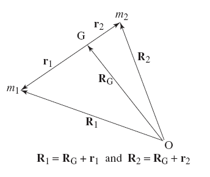 A molecular ion of mass m1 collides with an inert atom (or molecule) of mass m2. Consider a point in space O being the laboratory reference frame for construction position vectors R. Point G is another reference point representing the center of gravity. All vectors are shown with respect to the masses in the figure at right.
The center of gravity is clearly (m1 + m2)RG = m1R1 + m2R2. Then the following can be derived:
r1 = m2(R1 − R2)/(m1 + m2)
r2 = −m1(R1 − R2)/(m1 + m2)
If position is a function of time, then differentiating with respect to time, the time-dependent position is shown:
u1 = m2g/(m1 + m2)
u2 = −m1g/(m1 + m2)
where g = v1 − v2 and m1u1 + m2u2 = 0.
The conservation of momentum states that the kinetic energy of a rapid
particle colliding with a static target (v = 0) cannot be
entirely converted to internal energy. Kinetic energy available for convesion
(Et, or relative kinetic energy
) is the kinetic
energy in the center of mass reference frame (G). The momentum of the G frame
is zero. The following equations apply:
Et = { m1u12 + m2u22 } ÷ 2 = μg2/2
μ = m1m2/(m1 + m2)
Note that the relative kinetic energy is the product of the kinetic energy of the molecular ion and the fraction of the mass represented by the inert collisional target.
The mass spectrometer often has several features which allow it to do more than merely measure the m/z of a gas phase molecular ion. Many mass spectrometers are equipped with features that allow it to break apart or add other ions (adducts) to the ion. These features provide more information which often includes structural information.
Ions emerge from a source area and then are accelerated in a small entrance to the flight tube. In theory, the acceleration and velocity are proportional to the mass. Lighter ions will accelerate faster and attain a higher velocity than high mass ions. The time they travel a fixed distance through the flight tube will thus be proportional to their mass (the smaller or shorter the time value, the smaller the mass value).
A pulsed pusher voltage ensures that a collection of ions all leave the source at the same time.
The following relevant equations apply:
E = zeV [1]
E is the potential energy of an electric field, e is the coulombic charge of an ion (a universal constant whose value is 1.60217653 × 10−19 C), z the charge magnitude of the ion, and V the potential difference. Note that z, the charge magnitude of an ion, is a non-zero integer that is either negative or positive (..., −3, −2, −1, +1, +2, +3, ...), depending on whether the ion is negative or positive. The voltage V is effectively the accelerating voltage in the flight tube of the mass spectrometer.
The potential energy of ion accelerated in the electric field of a mass spectrometer (the accelerating voltage) becomes the kinetic energy of the ion, and so the kinetic energy equation applies:
E = ½mv2 [2]
where m is the mass of the ion and v is its velocity after being accelerated in the flight tube. The velocity of the ion can be determined by measuring a known distance, such as the length of the flight tube, against the time necessary to traverse that distance. Thus,
E = ½m(d/t)2 [3]
where d is the distance traversed, which is the length of the mass spectrometer flight tube, and t is the time of flight of the ion.
The equations of energy are solved for the time of flight of the ion (t). (Set equations [1] and [3] equal to one another, and solve for t.)
| t = √ | md 2 | [4] |
| 2zeV |
Equation [4] can be stated in another way:
ToF = k√ [5]
That is, the time of flight of any ion in the flight tube
is proportional to the—or is equal to a
constant times—the square root of the mass-to-charge ratio.
The constant
k is has the following value:
| k = | d | [6] |
| √2eV |
which is algebraically extracted from equation [4]. It is a
constant
because all the values are known and essentially
fixed: the length of the flight tube (d), the accelerating
voltage set by the mass spectrometer operator (V), and the coulombic
charge of any ion (e).
The MALDI-ToF of Waters/Micromass will be used an example of how these equations work in practice.
Waters recommends setting the source
voltage at 15,000 volts.
The Lteff
(or the effective length
of the flight tube) is about 1.8 meters. Suppose an analyte which
is a peptide that is ten amino acids long, and has a molecular mass
of 1265.7 Da. For the purposes of these calculations, we have to
convert the mass to kilograms, and the mass of 1 dalton (1 Da) is the mass
of a proton, which is 1.672621 × 10−27 kg.
The ionized peptide is generated within
the source—in the MALDI ToF, it is generated by using a laser on an
analyte embedded in a matrix, but it does not matter for these purposes
how the ion is generated—and then accelerated within the field.
Suppose that the generation of the ionized peptide involves a proton
(hydrogen ion) from the matrix to the peptide. The ionized peptide
now has a single positive charge (z = +1).
The time required to move within the flight tube, assuming the ionized peptide moves at a constant velocity within the flight tube after acceleration, is:
| t = √ | (1265.7 Da)(1.672621 × 10−27 kg Da−1)(1.8 m)2 | = 3.778 × 10−5 s = 37.78 μs |
| 2(+1)(1.60217653 × 10−19 C)(15,000 V) |
This is a direct evaluation of equation [4], where the values are inserted. Note that 1 volt = 1 J/C (1 Joule per Coulomb), and that 1 Joule is also equal to 1 kg m s−2. The result will be expressed in seconds. If the value z is negative, note that the electric field (voltage) should be a negative number, and so the equation can be evaluated without giving a result that is not a real number.
The Q-ToF micro MS has a clock generator with a frequency of 3.6 GHz, which allows it to keep track of a time period of 278 picoseconds [ = (3.6 GHz)−1]. Call this time period of 278 ps one ‘tick.’ With each tick, the ToF system considers this an increase in mass, assuming charge is the same. Since the time is proportional to the square root of the m/z, conversely, the m/z is proportional to square of the time. If a singly charged ion of mass m1 was detected at time t1, then a singly charged ion of mass m2 that is 4 × m1 would strike the detector at time t2 which is 2 × t1.
Recall that the resolution of a mass spectrometer is the mass of ion
(the peak maximum in a mass spectrum), or m
divided by the difference in the mass at 50% of the peak height (also
called full width half maximum
or FWHM), or Δm.
Note that m is really m/z and Δm is
Δm/z, but this assumes for simplicity a singly charged ion.
Because m is related to t (mass is related to time)
in a ToF MS, this means that Δm is related to Δt
as well. One tick represents the minimum time period that the Q-ToF
micro can itself resolve. The longer the tick period (Δt),
then the larger the mass difference (Δm).
Consider the difference between singly charged ions of mass 1000 Da and 1001 Da in the Q-ToF micro, with an accelerating voltage of 800 V and flight tube distance of 1.8 m. For the 1000 Da ion, time is 145.397 μs. For the 1001 Da ion, it is 145.47 μs. That is a difference of 0.046 μs, which represents 262 ticks on the Q-ToF clock.
Now consider the difference between ions of 1000.0 and 1000.1 Da. The time is 145.404 μs for the 1000.1 Da ion, a difference of only 25 ticks now. If the mass is now 1000.01 Da compared to 1000.00 Da, the time for 1000.01 Da is now 145.398 μs, only about 3-4 ticks difference. Thus the effective limit of the Q-ToF is the ability to resolve 0.1 Da under these conditions. The one way to increase the ability to resolve smaller differences in mass is either to reduce the accelerating voltage (not practical for orthogonal ToF as used in the Q-ToF micro) or to increase the flight tube distance (this is practical in many cases).
The Waters ToF MS is set up to pulse the ion beam into the flight tube and then to characterize the set of ions in that group. A new set of ions cannot be pulsed until the last (heaviest) ion has reached the flight tube detector. This usually occurs in nanoseconds. The pulsing pusher is set to produce a group of ions at 30 kHz, or once every 33 μs. Thus, in one second, 30,000 groups of ions can be analyzed and a scan (1 second spectrum) produced.
ToF is generally more suited to ionizations that occur rhythmically or in pulses, such as pulsed laser desorption. Although there is no upper limit with respect to mass measure, the practical theoretical limit is 350,000 Da.
Resolution is affected by many factors. Generally in ToF, ions of the same m/z ratio should theoretically all have the same acceleration, velocity, and time in the flight tube. In reality they do not. These minor differences in time show up as a Gaussian distribution which represents the peak in the Intensity vs. m/z spectra. The following equation applies to ToF resolution:
Resolution = time of flight / (2 * time spread)
The time spread is the difference in the time for the slowest and fastest ions to reach the detector.
[The theoretical discussion of this section comes from several sources, but the
figures and much of the discussion come from a web publication by R. E. Pedder
of ABB Inc. in Pittsburgh PA USA, published by Extrel CMS L.P. in Application
Note RA 2010A, Practical Quadrupole Theory: Graphical Theory
]
The quadrupole is a set of four rods whose axial length runs in the same direction as the ion beam. The placement of the rods is such that the distance between the faces of opposite poles is 1/1.148 times the diameter of the rod. This is chosen so that the geometric center approximates a hyperbolic electric field.
The ion beam actually enters into the dead center space that is the same distance from all the centers of the rods. The rods are subjected to a fluctuating (time-dependent) voltage that varies as a radiofrequency (usually fom a few Hz to 700 kHz). Moreover, the voltage of the rods does not have to be zero at the start of the wave: it can be offset from zero. The rods opposite one another are of one polarity, and the other pair opposite one another is of the other polarity. An electric field is created by the rods that is hyperbolic around the ion beam trajectory. Because the electric field has a component that varies with time, the trajectory of the ions is also likely to be affected by the fluctuating field. Ions with a certain mass will begin to resonate in their movements through the quadrupole. Those with a mass either too low or too high are not going to resonate, and their path will end at the quadrupole.
The power supply to the quadrupole is such that the DC pole bias determines the potential of the centerline. Two resolving DC supplies provide equal magnitude but opposite polarities to the quadrupole set. A high voltage RF transformer has a single primary and two secondaries which are 180° out of phase
Resonant ions that pass through quadrupole are usually found by varying the voltage rather than the RF.
| Φ = Vdc + Vrf cos(ωt) | x2 − y2 |
| r0 |
where Φ is the strength of the electric field at a position of the ion at x and y in the quadropole; x and y are orthogonal to ion movement within the quadrupole long axis (z); r0 is the radius of the quadrupole rods.
Solving the equations of motion provides the basis for finding the stable regions of ion motion. These are a and q (often symbolized A and Q, resp.).
| d 2u | + (au − 2qu cos 2ξ)u = 0 |
| dξ2 |
| a = | 8zU | q = | 4zV | a | = | 2U | ||
| mr2ω2 | mr2ω2 | q | V |
Here, U represents Vdc and V represents Vrf. The charge on the ion is z and its mass is m. The applied radiofrequency is ω and r represents the effective radius between electrodes. For the second order linear differential equation, ξ represents ωt/2 and u represents the position along the coordinate axes (x or y). The solution is:
u(ξ) = Γ ∑ ∞ n=−∞ C2n exp(2n + β)iξ + Γ′ ∑ ∞ n=−∞ c2n −exp(2n + β)iξ
This reduces to an infinite sum of sine and cosine functions. Ion trajectories are these infinite sums of sine and cosine functions, moving in x and y directions sinusoidally. The fundamental frequency is (ω0) but harmonic frequencies are added in.
MS (MS1) mode. When a quadrupole analyzer is scanned in MS mode (full scan), there is a reduced sensitivity since little time is spent on an m/z species and thus there are fewer ion counts.
Single Ion Recording (SIR). This particular MS mode sets the analyzer to let only one m/z species (or a narrow range) pass to the detector. This improves sensitivity a great deal, but there are no mass spectra, essentially a chromatogram (ion count vs. time).
[Source: Chapter C2.2 Hybrid Hexapole-ToF
Back to Basics,
Micromass UK Ltd.]
This type of analyzer combination is often used with an atmospheric pressure inlet/ion source. Such a source is ideal for a liquid chromatographic (LC) eluate flow in the inlet. Typical mechanisms are APcI or ESI, which are configured to provide desolvation and ionization. A Z-path can be used to direct ions toward the high vacuum analyzer block while efficiently reducing solvent molecules from entering the ion beam into the analyzer.
A quadrupole mass analyzer can be present and set in either a narrow or wide band pass. In narrow band pass, two opposed poles have an applied sinous time-dependent (RF) voltage applied while the other two opposing poles are fixed at a constant dc voltage. The combination permits ions within a range of m/z to pass through the poles whereas ions outside the range oscillate out of the path. In wide band pass, all poles are subject to a sinous RF voltage and there is no DC voltage, and all ions pass in what is essentially a quadrupole acting as an ion guide.
The hexapole is set up with an RF voltage and is used only to help focus the ion beam, since ions at the source spread because of repulsion and collision with air and solvent during formation, and they need beam narrowing. The hexapole is thus a re-focusing element. The vacuum is set at about 10−4 mbar. A second hexapole provides further collimation and is staged to a higher vacuum of 10−5 to 10−6 mbar, necessary for the ToF analyzer.
Because a continuous stream of ions is produced during ESI or APcI, and a ToF analyzer can only work with a pulse of ions, the ToF analyzer entrance is positioned orthogonally (at a right angle) to the continous ion beam. Pusher and puller extraction plates provide the pulse of ions sampled out of the continous stream and into the ToF analyzer.
The ion trap (IT) collects ions into an assembly composed of two cap electrodes and a ring electrode that create a magnetic field to contain the ions. IT does several steps to produce the mass spectra:
Helium. Helium gas is injected into the stream because if provides cooling of ions. In addition it serves as a collision gas during MSn techniques.
Electron Transfer Dissociation (ETD). Positive ions are collected into the trap and then fluoranthene anions being held in a container are injected into the focusing stream octopoles into the trap while the positive ion stream is blocked.
The most accurate mass analyzer presently, ions from the source are injected into a magnetic ring (cyclotron). A radiofrequency is emitted into the ions circling at constant velocity. This increases the radius at which they circle, and as the radius is increased, this brings the ions within the proximity of a loop circuit in which an oscillating current is induced by cycling ion movement near it. The signal of this oscillating current can be broken down Recall that a Fourier transformation converts a time domain to a frequency domain, that is, the transformation essentially does an inversion. Suppose that ions discriminated/analyzed on the basis of differences in separation by time are instead analyzed on the basis of a separation by frequency.
An ion with value m/z accelerated by voltage V and passing through a magnet with field B will be deflected in an arc which will have a radius of curvature r. Value r is constant: the ion coming from the source path must be deflected into the path leading to the detector so that detection can occur, and this does not change in the instrument. To detect a range of ions having different m/z, one can thus alter the acceleration voltage V or magnetic field B.
The relationship of m/z is:
| m | = | r 2 | B2 |
| z | 2 | V |
Note that the constant parameters of the instrument are grouped together.
A triple quadrupole MS features the first quad that becomes an ion selector within the mass range; ion (m/z selection is determined by oscillating Vrf and Vdc. Each selected ion passes into the second quad which is a collision cell in which CID can occur if set in MS/MS mode. In MS mode it passes to the last quad (MS2) without CID where there is Vrf only to tune the beam.
In MS/MS mode, the instrument is capable of multiple reaction monitoring (MRM). The first quad selects an m/z species as the precursor ion, and the third quad (MS2) is set to select the m/z of the product ion, providing a quantitative analysis.
MRM in a triple quad can provide data like SIR in a single quad, but additional advantages are:
Daughter/Product Ion Scanning. The MS2 quad can set to full scan mode rather than MRM during collision activation, which enables scanning of potential daughter ions to be used in MRM mode. This is essentially a qualitative analysis of fragmentation.
Precursor Ion Scanning. Alternatively the MS1 quad can be set in scanning mode while MS2 is set to be static to pass a single species. This precursor ion scanning helps in the detection of diagnostic losses.
Neutral Loss Scanning. Useful for detection of functional groups such as sulfates and glucuronides.
[Source: Chapter E2: Array Collectors (Detectors), Back to Basics, Micromass UK Limited, pp 437-454.]
Array collectors are actually a collection of point collectors (elements) which are assembled in a plane. Ions of a certain m/z are collected at one particular point detector (element) and ions of larger or smaller m/z are collected on either side. When point collectors are lined up in a plane, recording of the range of spectra is more rapid, since scanning with a single point collector requires multiple ionization pulses with prolonged scan times (sequential vs. concurrent scanning).
Each element in the array is a compact electron multiplier which can amplify its signal. The current flow is proportional to the count of ions striking the element per unit time. Resolution in the array depends on:
Array detectors make it possible for detecting smaller amounts of substances (improve sensitivity) or for dealing with intermittent instead of continuous ionization.
Quadrupole filters can be set up with simple point collectors since adjustments to the filter can be made on a continuous stream of ions over time. Magnetic sector analyzers disperse ions in space and the entirety of the ions can be detected simultaneously by an array collector. Because time-of-flight analyzers separate ions by time, a point detector is all that is needed.
The electron multipliers that form the detector element are charged at a potential of 1000-2000 V, with the cathode (negative) end at the ion beam entry, and the anode (positive) end drawing electrons that emerge from the cascade toward it. These electrons provide the sensing current in the circuit. Multiplier tube geometry is important. A straight tube cylinder (one type of channeltron) would yield secondary electrons in the cascade with many different amplification angles (back scatter), and these electrons emerge in the circuit at different times. This has the effect of reducing the signal peak and creating electrical noise. An alternative geometry in which the channeltron has a horn shape is designed to minimize backscatter; this type of multiplier has no separate dynodes.
The area of the array collector is fixed, so the ability of the detector to resolve ions of m/z magnitude depends on the how the analyzer is configured for the mass range in a single scan. If the mass range is kept narrow then the analyzer can achieve separations that an array collector can resolve. Conversely if the mass range is set for a wide range, the ability to discriminate m/z values by small differences is reduced.
For example, a mass range might be set for m/z from 500 to 1000, and the resolution in this range is 0.01 Da. But when the analyzer is set to analyze m/z between 2000 and 10,000, the limit of resolution increases to 0.1 Da.
The job of an element in an array detector (or a point detector) is primarily to be able to count ions that strike it. Detectors do not measure m/z directly: the system outside the detector determines the m/z by its position (if it is an element in an array working in a spatial domain) or by marking time increments (if it a point detector working in a time domain) in a fully calibrated environment (i.e., evaluating detection of unknowns against references with known masses).
As an ion counter, the dynamic (essentially working) range of the point ion detector is the ability to count from a few ions per unit time to tens of thousands of ions per unit time, with a fairly linear response. Elements within array detectors become more easily saturated (loss of linear response) than do point detectors. This is basically because electron multipliers larger in size have a larger dynamic range, and it is impractical to create array detectors whose elements are as large in size as systems with point detectors. Usually the smaller dynamic range of array elements is sufficient for doing work, but the concept is important to consider.
An ion's mass also affects the response of the electron multiplier: the larger the mass, the more the response falls. This is because ions of larger mass have a much lower velocity and produce fewer cascading electrons on impact with the multiplier.
Array detectors are used in preference to point detectors when ions must be counted for more than one m/z value within a short period of time. This is often dictated by the type of ionization being done. For example, with laser desorption or radionuclides, all ions are produced in a pulse and then accelerated toward the detector. The time span in which they must all be measured is beyond the ability of a point detector to be responsive to them, even if time-of-flight is the mode of separation/analysis (ion trap analyzers work differently however).
These are array of glass capillaries with a 10-25 μm inner diameter and coated inside with electron-emissive material. Biased at a high voltage, any ion striking the inside wall causes a cascade of secondary electron emissions, which in turn result in more cascades. The gain is about 103 to 104, and with the dual MCPs in a chevron configuration, the gain is 106 to 107.
Dead time is the refractory period when a detector is placed into a state when it can not detect ions. When a detector is bombarded with too many ions, the ions that follow behind are not counted, as they hit the detector within the refractory period. This gives a distorted view of the spectrum. Because the ions which hit the detector first are the ones lighter in mass, if they overwhelm the detector, the slower ones behind (and the ones with the heavier mass) will not really be counted in the numbers that they exist. This weights the count toward the ions that were lighter. On the spectrum, this is seen as a shift toward a lighter mass.
The only way to get an accurate measure of the distribution of the group is not to overwhelm the detector with a large count of ions. Thus the ion beam should be kept to a minimal number of ions.
The mass spectrometer produces essentially a plot of the mass-to-charge (m/z) of the ionized molecule with the count of the number of ions at that m/z value. The count of ions can be considered the absolute intensity. However, in practice the count of ions for all ionized molecules at an m/z value is presented as a percentage (from 0 to 100%) or a ratio (from 0.0 to 1.0) of the m/z value of the ion having the greatest number of counts. This is called the relative intensity. The m/z value of the ion having the greatest number of counted ions is called the base peak.
Click on image to obtain at a original resolution 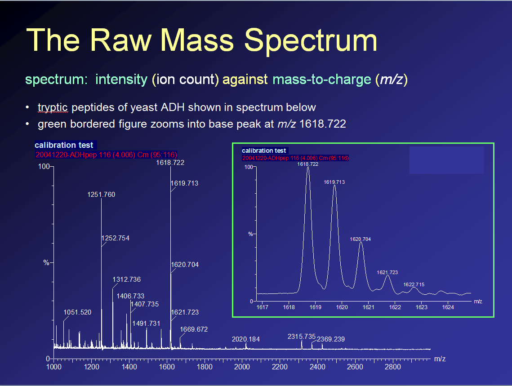
The figure at left shows how the mass spectrum appears. This is an unprocessed mass spectrum showing the ionizable tryptic peptides of the protein yeast alcohol dehydrogenase of a MALDI-MS analysis. The mass range measured was from m/z 1000 to 3000, and the base peak was of a peptide at m/z 1618.722. The green color-bordered inset zooms in on the mass spectrum to reveal the detail at the m/z 1618 peak, showing the mass range of about m/z 1617 to 1624. The detail shows that there are series of peaks separated by approximately 1 Th (1 amu). In fact, all of those peaks represent a single ion, a tryptic peptide.
| Isotope | Mass (amu) | Relative Abundance (%) |
|---|---|---|
| 1H | 1.007825037 | 99.985 |
| 2H | 2.014101787 | 0.015 |
| 12C | 12 | 98.9 |
| 13C | 13.003354 | 1.11 |
| 14N | 14.003074 | 99.6 |
| 15N | 15.00011 | 0.36 |
| 16O | 15.99491464 | 99.8 |
| 17O | 16.9991306 | 0.4 |
| 18O | 17.99915939 | 0.2 |
| 31P | 30.9737634 | 100 |
| 32S | 31.972074 | 95 |
| 33S | 32.9707 | 0.76 |
| 34S | 33.96838 | 4.22 |
| 36S | 35.96676 | 0.2 |
| Other Isotopes | ||
| 23Na | 22.98976979 | 100 |
| 35Cl | 34.968854 | 75.8 |
| 37Cl | 36.965896 | 24.2 |
Before looking at the detail of this mass spectrum, a short discussion of the atoms that make up molecules in general and of a particular class of molecules such as the biomolecular class proteins and their component peptides is necessary. The table at right shows the isotopes and their relative natural abundances of atoms that are particularly important to peptides and proteins. The amino acids that make up peptides and proteins are primarily made of carbon, hydrogen, nitrogen, and oxygen, although a few amino acids have sulfur as well. Peptides and proteins are also often associated (non-covalently) with other atoms too, usually as salts or other ions. It can be seen in the table, for example, that carbon has two isotopes, mostly (98.9%) the carbon-12 (12C) form. Oxygen has three isotopes, nearly 100% of which is the familiar 16O isotope.
Click on image to obtain at a original resolution 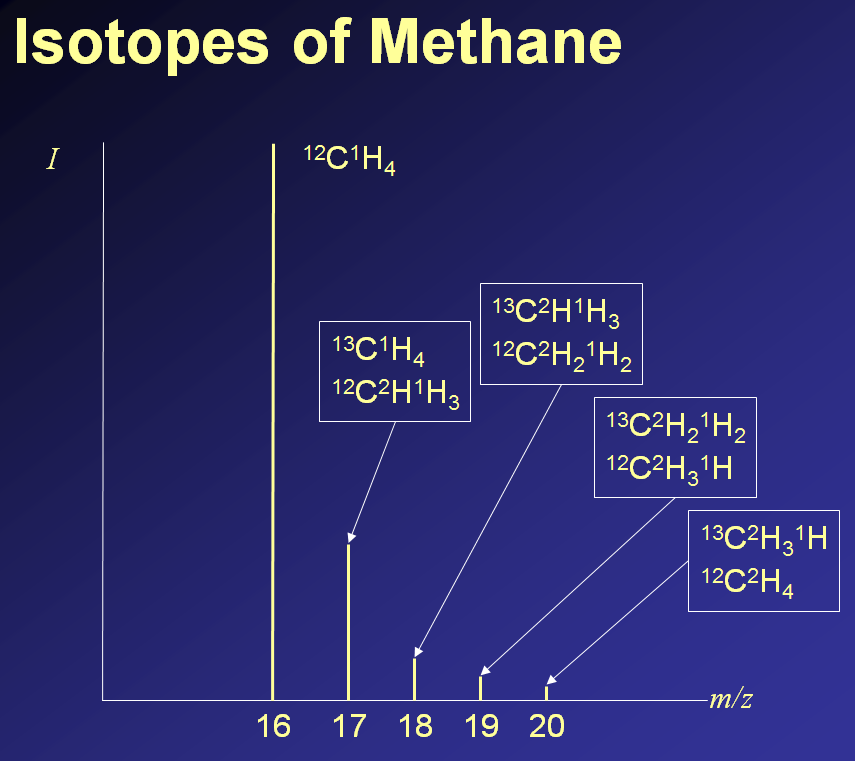
In most chemical or biochemical analyses, the isotopic forms of a molecule do not affect the chemistry that occurs. But because mass spectrometry measures molecular mass with great resolution, easily the difference of a single neutron or proton of the atomic nucleus, it is able to resolve the isotopic forms. Look at the schematized spectrum of methane (CH4) at the left; note it is not real spectrum, but plausible schematic form. If the molecule is made up of only the 12C isotopes of carbon and the 1H isotopes of hydrogen, it will have a nominal mass of 16 ( = 12 + 4 × 1). But because 13C and 2H (deuterium) also exist in nature, some of the methane molecules will have an atomic composition of 13C1H4 with a nominal mass of 17 (= 13 + 4 × 1), and also 12C2H1H3 (12 + 2 + 3 × 1 = 17). Other possible numeric combinations of isotopes can increase the mass of methane detected. The height of the signal peak, that is the relative intensity, can be predicted by computation based on the known constants of the relative natural abundance of each isotope. To compute these values, it is important to compute the product of the abundances of all the isotopic atoms that make up the molecule. Using the table above for 12C1H4, this is (0.989)(0.99985)4 = 0.9884067335 (rounded). This number will be the divisor in computing relative abundance. Now compute nominal mass of 17 for methane. Since there are two forms, 13C1H4 and 12C2H1H3, the products must be summed: (0.011)(0.99985)4 + (0.989)(0.015)(0.99985)3 = 0.025821727. Now divide this value by the abundance of the monoisotopic abundance to get the relative abundance: 0.025821727 ÷ 0.9884067335 = 0.026124596 (2.6%).
Click on image to obtain at a original resolution 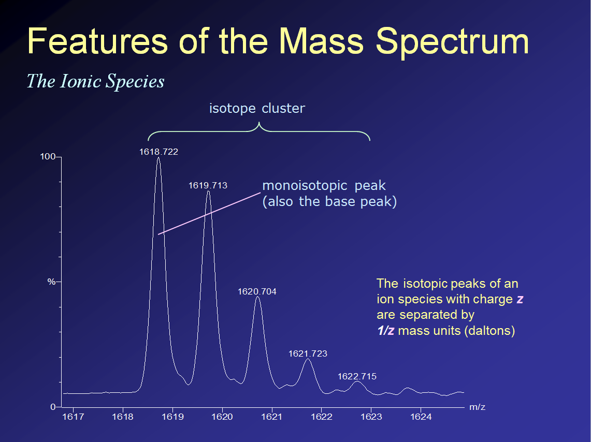
The figure at the right looks more closely at the inset from the yeast alcohol dehydrogenase tryptic petpides from the figure above, zooming into the mass range m/z 1617-1624, which features the single molecular ionic species at m/z1618.722. The series of peaks shown all belong to one molecular species, which is the peptide with sequence VLGIDGGEGKEELFR. This peptide is located in the yeast alcohol dehydrogenase single protein subnit at positions 198 to 212. The atomic composition of this peptide is C71H115N19O24. But the series of peaks shown are the isotopic cluster of that molecule with atomic composition C71H115N19O24. There are five observed (detectable) peaks in that series, forming the cluster. The peak at m/z 1618.722 has the smallest m/z value, and also the smallest mass of the peaks forming the cluster. This is called the monoisotopic peak: the monoisotopic peak (mass) of a molecular ion is composed of atoms that make up all the highly abundant atomic isotopes which have the lightest masses of those atoms. Thus the monoisotopic peak is 12C711H11514N1916O24. The peak at 1619.713, whose m/z value is ~ 1 Th (1 amu) greater (actually it is 0.991 amu) is the mass of one neutron greater. This might be one 13C instead of 12C, or 2H instead of 1H, or 15N instead of 14N, or 17O instead of 16O. Thus, that peak can represent any of the following molecules having the indicated atomic composition:
[Note: While peptide VLGIDGGEGKEELFR was generated by trypsin digestion of yeast alcohol dehydrogenase, an enzyme that hydrolyzes peptide bonds on the C-terminal side of Lys (K) and Arg (R) residues except when the following residue is Pro (P), there is K residue within the sequence. It has been shown that trypsin may not hydrolyze particularly after K residues efficiently, and probably when it is surrounded by negatively charged ionic residues such as the two Glu (E) residues that follow it and the one that also closely precedes. In order to improve the efficiency of trypsin digestion for doing proteomic analysis, there are guanidination kits containing reagent chemicals, using O-methylisourea, to convert the lysine primary ε-amino group into a more strongly basic and more cationic guandinyl function that is present on the Arg side chain.]
The mass spectrum not only contains the two items of information being the mass-to-charge (m/z) and a measure of its quantity (ion counts as relative intensity), but also the charge state (z) of the ions. The value z is computed from the differences in the m/z values in the isotope cluster that makes up the ion. For polyatomic molecules, in most cases an isotopic cluster is possible.
Click on image to obtain at a original resolution 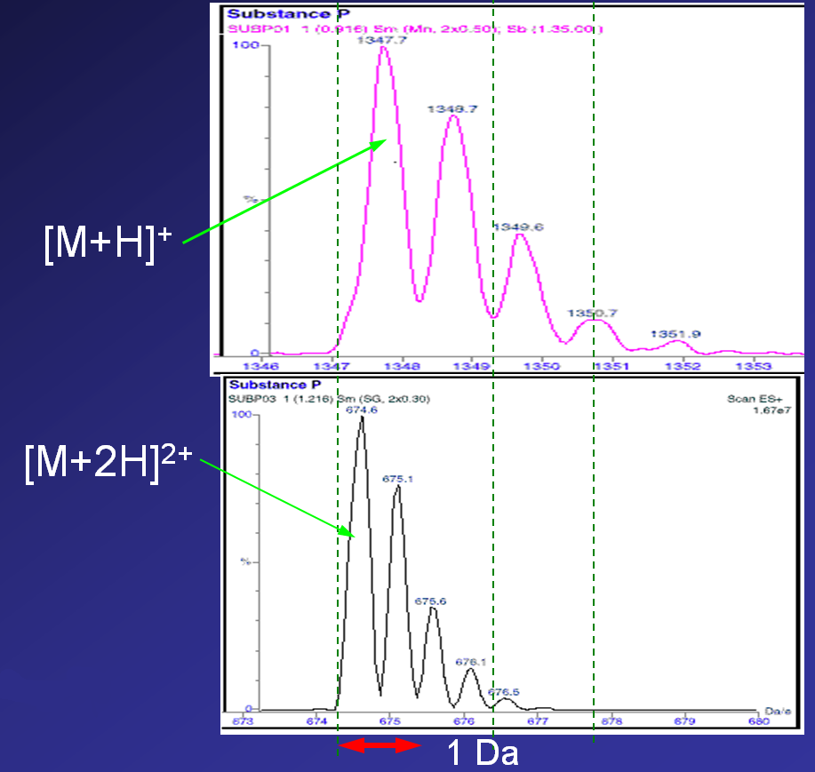
The computation of the charge state z is quite basic. In a calibrated instrument, obtain the spectrum. For the ion of interest, find the isotope cluster. This is not always easy: two ions of slightly different m/z may be very close together, and the start of the isotopic cluster (the monoisotopic peak) might overlap with the end of the series of peaks of the ion with the smaller m/z value. Sometimes clusters can be identified by predicting the appearance of all the relative intensities that form the cluster. Once the cluster is identified, then compute the difference between the first and second peak (monoisotopic peak and the m + 1 peak). The difference in Thomsons or atomic mass units (Δm) = 1/z, or rather after algebraic rearrangment, z = 1/Δm.
The figure at right will serve as an example. Substance P is a peptide of eleven amino acids, RPKPQQFFGLM. In electrospray in fully acidified solution, it can achieve a z = +3 state and seen in positive ion mode; this is because protons will bind to the side chains of the one R and K residue, as well as the N-terminus.. In neutral solution it probably achieves z = +2 state, with the side chains of the one R and K residue being charged. At a slightly higher pH (perhaps 9 or 10), it might be possible to obtain a peptide with z = +1. In most cases, a mixture of [M + H]+ and [M + 2H]2+ ions are seen. The monoisotopic mass of singly protonated substance P, the [M + H]+ form, is 1347.7360 amu. The monoisotopic mass of the [M + 2H]2+ form is 674.3719 amu. In the mass spectrum above, both of these ions appear, and different mass ranges are shown containing both isotope clusters. Note that for the z = +1 ion with monoisotopic peak at m/z 1347.7, the cluster peaks are separated by 1 amu (1 Da): Δm = 1. Thus z = 1 / Δm = 1 / 1 = 1. For the z = +2 ion with monoisotopic peak at m/z 674.6, which is about 0.2 amu off from the calculated 647.4, the peaks are separated by approximately 0.5 amu (0.5 Th): Δm = 0.5. Thus z = 1 / Δm = 1 / 0.5 = 2. If there were an ion at z = ±3, then the isotope cluster peaks would have Δm = 0.333. For the z = ±4, then Δm = 0.25.
It should be noted that the sign of the charge does not matter, but rather the magnitude. Clearly if the ion is detected in negative ion mode, then all ions detected must be negative in charge. The converse is true for positive ion mode.
Instrument resolution. If charge can be computed from the determination of Δm of the series of isotope cluster peaks, then it is the case that the peaks of the isotope cluster must be resolved by the instrument. For most even low resolution mass spectrometers, resolving z = +1 and +2 ion isotope cluster peaks is not difficult. However, for higher charge states, higher resolution instruments are absolutely required. In the case of biomolecules such as proteins and peptides, it might help to perform the analysis in electrospray positive ion mode at different pH. This would create the appearance and disappearance of the ionic species at different m/z values and consistent with the formula m/z = (M + zH) ÷ z for positive ion mode and m/z = (M − zH) ÷ z for negative ion mode.
Many biomolecules, particularly peptides and proteins, have multiple ionizable functional groups on the molecule. These groups usually are ionized with a proton at different pH. Many forms exist simultaneously at the pH range, and can be observed in the electrospray mass spectrum. Bioinformatics analysis using maximum entropy algorithms can take the numerous m/z values in an electrospray and compute the parent mass of the molecule that produced them. The computed mass has a theoretical zero charge state.
For an ion such as a protein that is multiply charged in positive ion mode typically by the binding of multiple protons, the m/z is clearly:
| m | = | M + nH | [1] |
| z | n |
The parameter of interest is M, the actual mass of the molecule. To solve for it, we need to get m/z data on at least two charged forms of the molecule. The difference can be a single charge:
n2 = n1 + 1 [2]
Thus the two forms of the ions will be:
| (m/z)1 = | M + n1H | (m/z)2 = | M + n2H | = | M + (n1 + 1)H | |
| n1 | n2 | n1 + 1 |
Note the substitution for n2 above. Both equations are rearranged to solve them for n1:
| n1 = | M | n1 = | M + H − (m/z)2 | |
| (m/z)1 − H | (m/z)2 − H |
Set the two equation for n1 equal to each other, and solve for the mass M:
| M = | H * [ (m/z)1 + (m/z)2 − H ] − (m/z)1(m/z)2 | [3] |
| (m/z)2 − (m/z)1 − H |
Eq. 3 is independent of the charge state (it does not require knowledge of the charge of any species), and it is solved by knowing the values of any two adjacent m/z species, which are easily obtained from the mass spectrum.
Suppose horse heart myoglobin gives two adjacent m/z species with values (m/z)1 = 1060.5 and (m/z)2 = 998.1
| M = | 1.008 * [1060.5 + 998.1 − 1.008] − (1060.5)(998.1) | = 16660.56 |
| 998.1 − 1060.5 − 1.008 |
For Eq. 3 to work, note that (m/z)1 must have a larger value than (m/z)2 because the molecule with (m/z)2 has the greater charge (n2 = n1 + 1). Moreover, the two species must be adjacent in the spectrum because they are separated by only one charge.
For any unfragmented, multiply charged pure ion with two adjacent m/z species in the mass spectrum, enter the m/z for the species in the table (taking care that (m/z)1 is larger than (m/z)2). The mass of the parent ion (singly charged) and charge of the species will be given in the result.
| (m/z)1: | z1 = | |||
| (m/z)2: | z2 = | |||
| Parent mass = | ||||
A method for deconvoluting electrospray mass spectra has been described identifying the charged-species that affect the value of M. Eq. 4 below is effectively the same as eq 1 in the previous section except that the ratio (m/z)n is symbolized as Rz.
Rz = (M ± zm)/z [4]
The mass-to-charge ratios of two ions of species M are now themselves expressed as ratios:
| (Rz)a | = | zb(M ± zam) | [5] |
| (Rz)b | za(M ± zbm) |
When the mass of the species M is very large, as for proteins, that is, when M >> zam or zbm, then eq 5 simplifies to
| (Rz)a | = | zb | [6] |
| (Rz)b | za |
A comparison of the ratio of m/z values (Rz) to the unique ratio of any two integers identifies the charge state values for each of the ions. Once the charge states are identified, the Rz values for two ions are multiplied by their charge state values.
(Rz)a za =
M ± zam [7]
(Rz)b zb =
M ± zbm [8]
(Rz)az −
(Rz)bz =
±m (za −
zb) [9]
These should report the mass of the charge-carrying species m without assuming that species m is uniformly a single species such as a proton, sodium, or potassium.
The example given is of lysozyme (average mass 14305.1438 Da). In the electrospray, m/z species of 1301.47452 and 1431.52218 are produced. The equations identify these as having charges of +11 and +10, respectively. The (Rz)n values are then multiplied by the zn. The mass of the charge-carrying species is then determined from the difference (eq. 6):
(1431.52218 × 10) − (1301.47542 × 11) = 1.0078
This is the mass of the proton, and so thus the proton is identified as the charge carrier accounting for the difference in these species.
Use the table below to enter in your adjacent m/z species to determine the mass of the charge carrier and the parent mass.
| (m/z)1: | z1 = | |||
| (m/z)2: | z2 = | |||
| Adduct (Charge-Carrying) mass = | ||||
| Parent mass = | ||||
See S. D. Maleknia and K. M. Downward (2005) Anal. Chem. 77, 111-119.
Mass spectral peaks are really an envelope of peaks. That is there is a main peak (one with the highest relative intensity) and a set of peaks on its shoulder whose on peak heights (relative intensities) decline in value on either side.
The envelope of peaks actually represents one molecular species in all of its isotopic forms. Suppose the dipeptide Gly-Lys (GK) is being analyzed by a mass spectrometer. The molecular formula of Gly-Lys is actually
H2N-CH2-COO-NH-CH(CH2CH2CH2CH2NH2)-COOH
or C8H17N3O4. But in a single molecule of GK, six of the carbon atoms may be isotope 12 (6 protons and 6 neutrons), and two of the carbon atoms may be isotope 14 (6 protons and 8 neutrons). Nitrogen, oxygen, and certainly hydrogen have isotopic forms as well. A mass spectrometer is able to distinguish between all sorts of isotopic forms not only of an atom, but of a molecule. In fact if a molecule has 8 carbon atoms, and carbon has 4 isotopic forms, then a molecule can potentially have 32 different masses based on carbon alone. Now when one includes nitrogen and its 4 isotopic forms and the number of nitrogen atoms, oxygen and its count of atoms and 5 isotopic forms, and hydrogen and its count of atoms and 3 isotopic forms, then the number of potential masses climbs into the thousands.
So why are there not thousands of peaks that form the envelope of a mass spectral peak?
What is the atomic mass of a hydrogen atom? 1.0079 atomic mass units (amu)?
Not exactly. The mass of an atom actually represents an average—that is the weight or mass average—of the mass of all the isotopes of the hydrogen atom. The mass of 1H is 1 amu. The mass of 2H (deuterium) is 2 amu. The mass of 3H (tritium) is 3 amu. The weight average is calculated as:
weight average = ∑i=1 n xi mi
where i represents one of the total number of particular isotopes of an atom, n represents the total number of isotopes of an atom, xi represents the fraction of the atoms that has a particular isotope (known as the relative abundance), and mi is the mass of that isotope in atomic mass units.
Note that:
∑i=1 n xi = 1
The relative abundance cannot be determined from knowledge of the weight average (the atomic weight) and the forms of isotopes an atom has unless that atom has only two isotopes. The best way to determine the relative abundance is to use a mass spectrometer, which can distinguish between isotopes.
Once the relative abundance is known (and published in the tables of the CRC Chemical Handbook of Chemistry & Physics), these values can be used to predict the intensities of shoulder peaks relative to the main peak.
[Source: Chapter G4 Choice of Mass Spectrometer,
Back to Basics, Micromass UK Ltd.]
Mass spectrometers were necessarily built by the scientists who wanted to use them for their projects. Nowadays, commercial mass spectrometers are available with different types of analyzers and sources, and these are easily adaptable by scientists doing methods and technology development. The more basic models are used by those who are not experts in mass spectrometry theory, but users who want fast answers which the use of an MS provides.
In planning the purchase of a mass spectrometer, the user must prepare as follows:
Structural information from proteins and proteolytic digests/fragments can be used to sequence peptides. One method is the protein ladder sequencing method, and the other takes advantage of the instability of protein ions in which the molecule decays or fragments.
Reported by Patterson et al., Anal. Chem. 67: 3971, 1995), the ladder sequencing method involves analysis of the time- or concentration-dependent degradation from either the N- or C-terminus using an exopeptidase. Mass differences will correspond to a single amino acid residue.
An example of a typical experiment is the use of carboxypeptidase Y (CPY) at different concentrations (concentration-dependent) in the digestion of ACTH 18-39 (mass = 2465.70 Da), done directly on the sample support with 1 pmol peptide (time was kept constant at 15 min). The sample was placed in a delayed-extraction ToF-MS set at 25 kV acceleration, with a 150 ns pulse delay, and pulse voltage at 1.3 kV, with 50 laser pulses per spectrum.